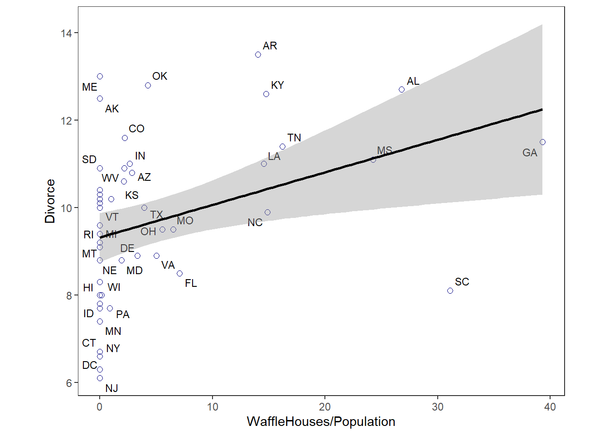

5 The many variables & the spurious waffles
5.1 Spurious association
結婚率と離婚率の間の因果関係を推論する。
結婚率と離婚率は正に相関するが、これは因果関係を表すだろうか？
data(WaffleDivorce)
d <- WaffleDivorce
head(d)## Location Loc Population MedianAgeMarriage Marriage Marriage.SE Divorce
## 1 Alabama AL 4.78 25.3 20.2 1.27 12.7
## 2 Alaska AK 0.71 25.2 26.0 2.93 12.5
## 3 Arizona AZ 6.33 25.8 20.3 0.98 10.8
## 4 Arkansas AR 2.92 24.3 26.4 1.70 13.5
## 5 California CA 37.25 26.8 19.1 0.39 8.0
## 6 Colorado CO 5.03 25.7 23.5 1.24 11.6
## Divorce.SE WaffleHouses South Slaves1860 Population1860 PropSlaves1860
## 1 0.79 128 1 435080 964201 0.45
## 2 2.05 0 0 0 0 0.00
## 3 0.74 18 0 0 0 0.00
## 4 1.22 41 1 111115 435450 0.26
## 5 0.24 0 0 0 379994 0.00
## 6 0.94 11 0 0 34277 0.00ちなみにWaffleHouseの店舗数と離婚率の関係
d %>%
ggplot(aes(x=WaffleHouses/Population, y = Divorce))+
geom_point(size=2,color = "navyblue",shape=1)+
geom_text_repel(aes(label=Loc),color="black",size=3)+
geom_smooth(method = "lm",color="black",size=1)+
theme_bw()+
theme(panel.grid = element_blank(),
aspect.ratio = 0.8)
離婚率と結婚率、結婚年齢の関係を考える。
d %>%
ggplot(aes(x=Marriage,y=Divorce))+
geom_point(size=3,shape=1,color="navyblue")+
geom_smooth(method = "lm",color="black",size=1)+
theme_bw()+
theme(panel.grid = element_blank(),
aspect.ratio = 0.8)+
xlab("Marriage rate")+
ylab("Divorce rate") -> p1
d %>%
ggplot(aes(x=MedianAgeMarriage,y=Divorce))+
geom_point(size=3,shape=1,color="navyblue")+
geom_smooth(method = "lm",color="black",size=1)+
theme_bw()+
theme(panel.grid = element_blank(),
aspect.ratio = 0.8)+
xlab("Median age marriage")+
ylab("Divorce rate") -> p2
d %>%
ggplot(aes(x=MedianAgeMarriage,y=Marriage))+
geom_point(size=3,shape=1,color="navyblue")+
geom_smooth(method = "lm",color="black",size=1)+
theme_bw()+
theme(panel.grid = element_blank(),
aspect.ratio = 0.8)+
xlab("Median age marriage")+
ylab("Marriage rate") -> p3
p1|p2|p3
データを標準化する。
d %>%
mutate(D = standardize(Divorce),
M = standardize(Marriage),
A = standardize(MedianAgeMarriage)) ->d
# ちなみに
sd(d$Divorce)## [1] 1.820814sd(d$Marriage)## [1] 3.797905sd(d$MedianAgeMarriage)## [1] 1.24363まずは、離婚率と結婚年齢の関係を考える。
以下のモデルを考える。
\(D_{i} \sim Normal(\mu_{i}, \sigma)\)
\(\mu_{i} \sim \alpha + \beta_{A}A_{i}\)
\(\alpha \sim Normal(0, 0.2)\)
\(\beta_{A} \sim Normal(0, 0.05)\)
\(\sigma \sim Exponential(1)\)
モデルを書く。
b5.1 <-
brm(data = d,
family = gaussian,
formula = D ~ 1 + A,
prior = c(prior(normal(0,0.2),class=Intercept),
prior(normal(0,0.5),class=b),
prior(exponential(1),class=sigma)),
seed = 5, iter = 2000, warmup = 1000,
chains = 4, sample_prior = T,
backend = "cmdstanr",
file = "output/Chapter5/b5.1")
summary(b5.1)## Family: gaussian
## Links: mu = identity; sigma = identity
## Formula: D ~ 1 + A
## Data: d (Number of observations: 50)
## Draws: 4 chains, each with iter = 2000; warmup = 1000; thin = 1;
## total post-warmup draws = 4000
##
## Population-Level Effects:
## Estimate Est.Error l-95% CI u-95% CI Rhat Bulk_ESS Tail_ESS
## Intercept -0.00 0.10 -0.19 0.20 1.00 4144 3159
## A -0.57 0.12 -0.80 -0.33 1.00 4041 3081
##
## Family Specific Parameters:
## Estimate Est.Error l-95% CI u-95% CI Rhat Bulk_ESS Tail_ESS
## sigma 0.82 0.08 0.68 1.00 1.00 3748 3033
##
## Draws were sampled using sample(hmc). For each parameter, Bulk_ESS
## and Tail_ESS are effective sample size measures, and Rhat is the potential
## scale reduction factor on split chains (at convergence, Rhat = 1).事前分布からのサンプリングを行う。
prior_51 <- prior_samples(b5.1)
head(prior_51)## Intercept b sigma
## 1 0.149090 -0.1981440 2.554740
## 2 -0.303870 -0.0584441 1.322460
## 3 -0.127389 -0.1347680 0.711124
## 4 0.114389 -0.5152620 0.860517
## 5 0.127717 -0.1790560 0.729930
## 6 0.290030 -0.1961800 0.332693prior_51 %>%
data.frame() %>%
slice_sample(n=50) %>%
rownames_to_column("draw") %>%
tidyr::expand(nesting(draw,Intercept,b),
a=c(-2,2)) %>%
mutate(d = Intercept + b*a) -> prior_51
prior_51 %>%
ggplot(aes(x=a,y=d,group=draw))+
geom_line(alpha = 1/2)+
scale_x_continuous("Median age mariage (sd)",
breaks = seq(-2,2,by=1))+
scale_y_continuous("Divorce rate(std)",
breaks = seq(-2,2,by=1))+theme_bw()+
theme(panel.grid = element_blank(),
aspect.ratio = 1)
各パラメータの事後分布は以下の通り。
post_51 <- posterior_samples(b5.1)
bind_rows(mean_qi(post_51 %>% gather_variables()),
ggdist::median_hdi(post_51 %>% gather_variables())) %>%
as_tibble()## # A tibble: 17 × 7
## .variable .value .lower .upper .width .point .interval
## <chr> <dbl> <dbl> <dbl> <dbl> <chr> <chr>
## 1 b_A -0.566 -0.796 -0.333 0.95 mean qi
## 2 b_Intercept -0.000206 -0.194 0.197 0.95 mean qi
## 3 lp__ -62.2 -65.5 -60.8 0.95 mean qi
## 4 lprior -1.15 -1.91 -0.629 0.95 mean qi
## 5 prior_b 0.00271 -0.974 0.973 0.95 mean qi
## 6 prior_Intercept -0.00110 -0.384 0.395 0.95 mean qi
## 7 prior_sigma 0.988 0.0287 3.64 0.95 mean qi
## 8 sigma 0.822 0.677 1.00 0.95 mean qi
## 9 b_A -0.566 -0.800 -0.339 0.95 median hdi
## 10 b_Intercept 0.00111 -0.195 0.196 0.95 median hdi
## 11 lp__ -61.9 -64.9 -64.7 0.95 median hdi
## 12 lp__ -61.9 -64.6 -60.7 0.95 median hdi
## 13 lprior -1.11 -1.81 -0.560 0.95 median hdi
## 14 prior_b 0.00554 -0.982 0.944 0.95 median hdi
## 15 prior_Intercept 0.00329 -0.411 0.365 0.95 median hdi
## 16 prior_sigma 0.682 0.000585 2.94 0.95 median hdi
## 17 sigma 0.816 0.675 0.998 0.95 median hdi事後分布からのサンプリングを行って回帰直線を描く。
結婚年齢が高いほど、離婚率も高いように見える。
# 信頼区間と予測区間を作図
A_seq <- tibble(A = seq(-3,3,length.out=100))
fit_51 <- fitted(b5.1, newdata = A_seq) %>%
as_tibble() %>%
bind_cols(A_seq)
predict_51 <- predict(b5.1, newdata = A_seq) %>%
as_tibble() %>%
bind_cols(A_seq)
d %>%
ggplot(aes(x=A,y=D))+
geom_point(size=3,alpha=1/2,shape=1,
color="navyblue")+
geom_ribbon(data = fit_51,aes(y = Estimate,
ymin = Q2.5,
ymax = Q97.5),
fill = "black", alpha = 3/8)+
geom_ribbon(data = predict_51,aes(y = Estimate,
ymin = Q2.5,
ymax = Q97.5),
fill = "black", alpha = 1/8)+
geom_line(data = predict_51,aes(y = Estimate,
x = A))+
scale_x_continuous("Median age mariage (sd)",
breaks = seq(-3,3,by=1))+
scale_y_continuous("Divorce rate(std)",
breaks = seq(-3,3,by=1))+theme_bw()+
theme(panel.grid = element_blank(),
aspect.ratio = 1) ->p1
print(p1)
結婚率と離婚率に関しても同様に分析。
\(D_{i} \sim Normal(\mu_{i}, \sigma)\)
\(\mu_{i} \sim \alpha + \beta_{M}M_{i}\)
\(\alpha \sim Normal(0, 0.2)\)
\(\beta_{M} \sim Normal(0, 0.05)\)
\(\sigma \sim Exponential(1)\)
b5.2 <-
brm(data = d,
family = gaussian,
formula = D ~ 1 + M,
prior = c(prior(normal(0,0.2),class=Intercept),
prior(normal(0,0.5),class=b),
prior(exponential(1),class=sigma)),
seed = 5, iter = 2000, warmup = 1000,
chains = 4, sample_prior = T,
backend = "cmdstanr",
file = "output/Chapter5/b5.2")
summary(b5.2)## Family: gaussian
## Links: mu = identity; sigma = identity
## Formula: D ~ 1 + M
## Data: d (Number of observations: 50)
## Draws: 4 chains, each with iter = 2000; warmup = 1000; thin = 1;
## total post-warmup draws = 4000
##
## Population-Level Effects:
## Estimate Est.Error l-95% CI u-95% CI Rhat Bulk_ESS Tail_ESS
## Intercept -0.00 0.11 -0.23 0.23 1.00 4074 2793
## M 0.35 0.13 0.08 0.60 1.00 3732 2675
##
## Family Specific Parameters:
## Estimate Est.Error l-95% CI u-95% CI Rhat Bulk_ESS Tail_ESS
## sigma 0.95 0.10 0.78 1.16 1.00 3665 2913
##
## Draws were sampled using sample(hmc). For each parameter, Bulk_ESS
## and Tail_ESS are effective sample size measures, and Rhat is the potential
## scale reduction factor on split chains (at convergence, Rhat = 1).事後分布からのサンプリングを行って回帰直線を描く。
結婚率が高いほど、離婚率も高いように見える。
post_52 <- posterior_samples(b5.2)
bind_rows(mean_qi(post_52 %>% gather_variables()),
median_hdi(post_52 %>% gather_variables())) %>%
as_tibble()## # A tibble: 16 × 7
## .variable .value .lower .upper .width .point .interval
## <chr> <dbl> <dbl> <dbl> <dbl> <chr> <chr>
## 1 b_Intercept -0.0000870 -0.230 0.227 0.95 mean qi
## 2 b_M 0.348 0.0775 0.600 0.95 mean qi
## 3 lp__ -69.0 -72.3 -67.6 0.95 mean qi
## 4 lprior -0.922 -1.74 -0.494 0.95 mean qi
## 5 prior_b -0.0136 -0.971 0.966 0.95 mean qi
## 6 prior_Intercept 0.00628 -0.397 0.384 0.95 mean qi
## 7 prior_sigma 0.992 0.0237 3.79 0.95 mean qi
## 8 sigma 0.951 0.781 1.16 0.95 mean qi
## 9 b_Intercept -0.000115 -0.217 0.233 0.95 median hdi
## 10 b_M 0.349 0.101 0.623 0.95 median hdi
## 11 lp__ -68.7 -71.6 -67.5 0.95 median hdi
## 12 lprior -0.851 -1.54 -0.427 0.95 median hdi
## 13 prior_b -0.0162 -0.947 0.982 0.95 median hdi
## 14 prior_Intercept 0.0109 -0.372 0.401 0.95 median hdi
## 15 prior_sigma 0.683 0.000108 2.96 0.95 median hdi
## 16 sigma 0.942 0.770 1.15 0.95 median hdi# 信頼区間と予測区間を作図
M_seq <- tibble(M = seq(-3,3,length.out=100))
fit_52 <- fitted(b5.2, newdata = M_seq) %>%
as_tibble() %>%
bind_cols(M_seq)
predict_52 <- predict(b5.2, newdata = M_seq) %>%
as_tibble() %>%
bind_cols(M_seq)
d %>%
ggplot(aes(x=M,y=D))+
geom_point(size=3,alpha=1/2,shape=1,
color="navyblue")+
geom_ribbon(data = fit_52,aes(y = Estimate,
ymin = Q2.5,
ymax = Q97.5),
fill = "black", alpha = 3/8)+
geom_ribbon(data = predict_52,aes(y = Estimate,
ymin = Q2.5,
ymax = Q97.5),
fill = "black", alpha = 1/8)+
geom_line(data = predict_52,aes(y = Estimate,
x = M))+
scale_x_continuous("Mariage rate (sd)",
breaks = seq(-3,3,by=1))+
scale_y_continuous("Divorce rate(std)",
breaks = seq(-3,3,by=1))+theme_bw()+
theme(panel.grid = element_blank(),
aspect.ratio = 1) -> p2
print(p2)
p1|p2
これら両方は因果関係によるものだろうか？
3つの変数の関係をグラフィカルモデルを用いて考える。
5.1.1 グラフを用いて因果モデルを考える
dag_coords <-
tibble(name = c("A", "M", "D"),
x = c(1, 3, 2),
y = c(2, 2, 1))
DAG5.1 <-
dagify(M ~ A,
D ~ A + M,
coords = dag_coords)
DAG5.1 %>%
ggplot(aes(x = x, y = y, xend = xend, yend = yend)) +
geom_dag_point(color = "firebrick", alpha = 1/4, size = 15) +
geom_dag_text(color = "firebrick") +
geom_dag_edges(edge_color = "firebrick") +
scale_x_continuous(NULL, breaks = NULL, expand = c(.1, .1)) +
scale_y_continuous(NULL, breaks = NULL, expand = c(.1, .1)) +
theme_bw() +
theme(panel.grid = element_blank()) ->p42つの因果モデルを考える。
DAG5.2 <-
dagify(M ~ A,
D ~ A ,
coords = dag_coords)
DAG5.2 %>%
ggplot(aes(x = x, y = y, xend = xend, yend = yend)) +
geom_dag_point(color = "firebrick", alpha = 1/4, size = 15) +
geom_dag_text(color = "firebrick") +
geom_dag_edges(edge_color = "firebrick") +
scale_x_continuous(NULL, breaks = NULL, expand = c(.1, .1)) +
scale_y_continuous(NULL, breaks = NULL, expand = c(.1, .1)) +
theme_bw() +
theme(panel.grid = element_blank()) ->p5
p4|p5d %>%
dplyr::select(D:A) %>%
cor() %>%
round(digits=3)## D M A
## D 1.000 0.374 -0.597
## M 0.374 1.000 -0.721
## A -0.597 -0.721 1.000dagittyパッケージを用いて、条件付き独立を調べる。
# DAG1
DAG1 <- dagitty('dag{ D <- A -> M -> D}')
impliedConditionalIndependencies(DAG1)
# DAG2
DAG2 <- dagitty('dag{ D <- A -> M }')
impliedConditionalIndependencies(DAG2)## D _||_ M | ADAG1はどの変数で条件づけたとしても、それぞれの変数が従属であることを表している。
一方で、DAG2はAで条件付けすれば、MとDは独立であることを示している。
このことを検証するため、以下のモデルを検討する。DAG2が正しければ、\(\beta_{M}\)は0になるはずである。
\(D_{i} \sim Normal(\mu_{i}, \sigma)\)
\(\mu_{i} \sim \alpha + \beta_{A}A_{i} + \beta_{M}M_{i}\)
\(\alpha \sim Normal(0, 0.2)\)
\(\beta_{A} \sim Normal(0, 0.05)\)
\(\beta_{M} \sim Normal(0, 0.05)\)
\(\sigma \sim Exponential(1)\)
モデリングする。
b5.3 <-
brm(data =d,
family = gaussian,
formula = D ~ 1 + A + M,
prior= c(prior(normal(0,0.2),class=Intercept),
prior(normal(0,0.5),class=b),
prior(exponential(1),class=sigma)),
seed = 5, iter = 4000, warmup = 3000,
chains = 4, sample_prior = T,
backend = "cmdstanr",
file = "output/Chapter5/b5.3")結果を見てみると、\(\beta_{M}\)はほとんど0に近く、DAG2と一致する。
summary(b5.3)## Family: gaussian
## Links: mu = identity; sigma = identity
## Formula: D ~ 1 + A + M
## Data: d (Number of observations: 50)
## Draws: 4 chains, each with iter = 4000; warmup = 3000; thin = 1;
## total post-warmup draws = 4000
##
## Population-Level Effects:
## Estimate Est.Error l-95% CI u-95% CI Rhat Bulk_ESS Tail_ESS
## Intercept 0.00 0.10 -0.19 0.20 1.00 2839 2372
## A -0.61 0.16 -0.93 -0.29 1.00 2912 2811
## M -0.06 0.16 -0.38 0.25 1.00 2883 2865
##
## Family Specific Parameters:
## Estimate Est.Error l-95% CI u-95% CI Rhat Bulk_ESS Tail_ESS
## sigma 0.83 0.09 0.68 1.01 1.00 3662 3119
##
## Draws were sampled using sample(hmc). For each parameter, Bulk_ESS
## and Tail_ESS are effective sample size measures, and Rhat is the potential
## scale reduction factor on split chains (at convergence, Rhat = 1).sample_b53 <-b5.3 %>%
posterior_samples()
pairs(b5.3)bind_rows(mean_qi(sample_b53 %>% gather_variables()),median_hdi(sample_b53 %>% gather_variables())) %>%
data.frame()## .variable .value .lower .upper .width .point
## 1 b_A -0.608597286 -0.926476750 -0.2875174 0.95 mean
## 2 b_Intercept 0.002119988 -0.192420900 0.2036938 0.95 mean
## 3 b_M -0.063691753 -0.379385975 0.2517328 0.95 mean
## 4 lp__ -62.858440000 -66.505325000 -61.0215975 0.95 mean
## 5 lprior -1.567187314 -2.726402750 -0.8577874 0.95 mean
## 6 prior_b -0.008235822 -0.982618525 0.9799550 0.95 mean
## 7 prior_Intercept -0.002222847 -0.388412525 0.3990599 0.95 mean
## 8 prior_sigma 0.985647501 0.027099925 3.6812593 0.95 mean
## 9 sigma 0.826615921 0.675801775 1.0126380 0.95 mean
## 10 b_A -0.611012500 -0.931720000 -0.2942620 0.95 median
## 11 b_Intercept -0.000616276 -0.193018000 0.2014380 0.95 median
## 12 b_M -0.062486200 -0.372572000 0.2577620 0.95 median
## 13 lp__ -62.541950000 -65.684100000 -60.8271000 0.95 median
## 14 lprior -1.484605000 -2.528500000 -0.7534570 0.95 median
## 15 prior_b -0.003533605 -0.982426000 0.9846340 0.95 median
## 16 prior_Intercept -0.005888445 -0.396181000 0.3863340 0.95 median
## 17 prior_sigma 0.681631000 0.000231375 2.9564600 0.95 median
## 18 sigma 0.821471000 0.662940000 0.9932160 0.95 median
## .interval
## 1 qi
## 2 qi
## 3 qi
## 4 qi
## 5 qi
## 6 qi
## 7 qi
## 8 qi
## 9 qi
## 10 hdi
## 11 hdi
## 12 hdi
## 13 hdi
## 14 hdi
## 15 hdi
## 16 hdi
## 17 hdi
## 18 hdib5.1~b5.3の結果を比較してみる。
bind_cols(
posterior_samples(b5.1) %>%
transmute("b5.1_beta[A]" = b_A),
posterior_samples(b5.2) %>%
transmute("b5.2_beta[M]" = b_M),
posterior_samples(b5.3) %>%
transmute("b5.3_beta[M]" = b_M,
"b5.3_beta[A]" = b_A)
) %>%
pivot_longer(1:4) %>%
group_by(name) %>%
summarise(mean = mean(value),
ll = quantile(value, prob = .025),
ul = quantile(value, prob = .975)) %>%
separate(col = name, into = c("fit","parameter"),
sep = "_") %>%
ggplot(aes(x = mean, xmin = ll, xmax = ul, y = fit))+
geom_vline(xintercept = 0, color = "firebrick", alpha = 1/5)+
geom_pointrange(color = "firebrick") +
labs(x = "posterior", y = NULL) +
theme_bw() +
theme(panel.grid = element_blank(),
strip.background = element_rect(fill = "transparent", color = "transparent")) +
facet_wrap(~ parameter, ncol = 1, labeller = label_parsed)b5.3の結果を際釈するために、3つの図を描く。
5.1.2 Predictor residual plots
まず、結婚率を結婚年齢で回帰したのち、予測値と実測値の間の残差を調べる。残差は結婚率の内、結婚年齢では説明できない部分である。
以下のモデルを考える。
\(M_{i} \sim Normal(\mu_{i}, \sigma)\)
\(\mu_{i} \sim \alpha + \beta A_{i}\)
\(\alpha \sim Normal(0, 0.2)\)
\(\beta \sim Normal(0, 0.05)\)
\(\sigma \sim Exponential(1)\)
b5.4 <-
brm(data = d,
family = gaussian,
formula = M ~ 1 + A,
prior = c(prior(normal(0,0.2),class=Intercept),
prior(normal(0,0.5),class=b),
prior(exponential(1),class=sigma)),
seed = 5, iter = 2000, warmup = 1000,
chains = 4, sample_prior = T,
backend = "cmdstanr",
file = "output/Chapter5/b5.4")
print(b5.4) ## Family: gaussian
## Links: mu = identity; sigma = identity
## Formula: M ~ 1 + A
## Data: d (Number of observations: 50)
## Draws: 4 chains, each with iter = 2000; warmup = 1000; thin = 1;
## total post-warmup draws = 4000
##
## Population-Level Effects:
## Estimate Est.Error l-95% CI u-95% CI Rhat Bulk_ESS Tail_ESS
## Intercept -0.00 0.09 -0.18 0.18 1.00 3791 3108
## A -0.69 0.10 -0.90 -0.49 1.00 3890 3151
##
## Family Specific Parameters:
## Estimate Est.Error l-95% CI u-95% CI Rhat Bulk_ESS Tail_ESS
## sigma 0.71 0.08 0.59 0.88 1.00 3813 2930
##
## Draws were sampled using sample(hmc). For each parameter, Bulk_ESS
## and Tail_ESS are effective sample size measures, and Rhat is the potential
## scale reduction factor on split chains (at convergence, Rhat = 1).残差を視覚化してみる。
fit_b54 <- fitted(b5.4) %>%
data.frame() %>%
bind_cols(d)
fit_b54 %>%
ggplot(aes(x=A,y=M))+
geom_point(size=3,shape=1,color="navyblue")+
geom_segment(aes(xend = A, yend = Estimate),size=1/4)+
geom_line(aes(x=A,y=Estimate))+
geom_text_repel(data = . %>% filter(Loc %in% c("WY", "ND", "ME", "HI", "DC")),
aes(label = Loc),
size = 3, seed = 14)+
labs(x = "Age at marriage (std)",
y = "Marriage rate (std)")+
coord_cartesian(ylim = range(d$M))+
theme_classic()+
theme(panel.grid = element_blank(),
aspect.ratio = .95) -> p5
p5
残差と離婚率の関係を見てみる。
ほぼ関連はないことが分かる。
red_b54 <- residuals(b5.4) %>%
data.frame() %>%
bind_cols(d)
p6 <-
red_b54 %>%
ggplot(aes(x=Estimate,y=D))+
geom_point(color="navyblue",size=3,shape=1)+
geom_vline(xintercept = 0, linetype = "dashed")+
geom_smooth(method = "lm", color = "black",size=1/2)+
theme_classic()+
geom_text_repel(data = . %>% filter(Loc %in% c("WY", "ND", "ME", "HI", "DC")),
aes(label = Loc),
size = 3, seed = 14)+
theme(aspect.ratio=1)+
labs(x = "Marriage rate residuals",
y = "Divorce rate (std)")
p6
今度は、結婚年齢を結婚率で回帰して同様の作図をしてみる。
b5.5 <-
brm(data = d,
family = gaussian,
formula = A ~ 1 + M,
prior = c(prior(normal(0,0.2),class=Intercept),
prior(normal(0,0.5),class=b),
prior(exponential(1),class=sigma)),
seed = 5, iter = 2000, warmup = 1000,
chains = 4, sample_prior = T,
backend = "cmdstanr",
file = "output/Chapter5/b5.5")
print(b5.5) ## Family: gaussian
## Links: mu = identity; sigma = identity
## Formula: A ~ 1 + M
## Data: d (Number of observations: 50)
## Draws: 4 chains, each with iter = 2000; warmup = 1000; thin = 1;
## total post-warmup draws = 4000
##
## Population-Level Effects:
## Estimate Est.Error l-95% CI u-95% CI Rhat Bulk_ESS Tail_ESS
## Intercept -0.00 0.09 -0.18 0.17 1.00 3599 3284
## M -0.69 0.10 -0.89 -0.50 1.00 3710 3136
##
## Family Specific Parameters:
## Estimate Est.Error l-95% CI u-95% CI Rhat Bulk_ESS Tail_ESS
## sigma 0.71 0.08 0.58 0.88 1.00 3363 2794
##
## Draws were sampled using sample(hmc). For each parameter, Bulk_ESS
## and Tail_ESS are effective sample size measures, and Rhat is the potential
## scale reduction factor on split chains (at convergence, Rhat = 1).残差を視覚化してみる。
fit_b55 <- fitted(b5.5) %>%
data.frame() %>%
bind_cols(d)
fit_b55 %>%
ggplot(aes(x=M,y=A))+
geom_point(size=3,shape=1,color="navyblue")+
geom_segment(aes(xend = M, yend = Estimate),size=1/4)+
geom_line(aes(x=M,y=Estimate))+
geom_text_repel(data = . %>% filter(Loc %in% c( "ND", "HI", "DC")),
aes(label = Loc),
size = 3, seed = 14)+
labs(y = "Age at marriage (std)",
x = "Marriage rate (std)")+
coord_cartesian(ylim = range(d$M))+
theme_classic()+
theme(panel.grid = element_blank(),
aspect.ratio = .95) -> p7
p7
残差と離婚率の関係を見てみる。
今度は、関連がみられることが分かる。
red_b55 <- residuals(b5.5) %>%
data.frame() %>%
bind_cols(d)
p8 <-
red_b55 %>%
ggplot(aes(x=Estimate,y=D))+
geom_point(color="navyblue",size=3,shape=1)+
geom_vline(xintercept = 0, linetype = "dashed")+
geom_smooth(method = "lm", color = "black",size=1/2)+
theme_classic()+
geom_text_repel(data = . %>% filter(Loc %in% c( "ND", "HI", "DC")),
aes(label = Loc),
size = 3, seed = 14)+
theme(aspect.ratio=1)+
labs(x = "Age at marriage residuals",
y = "Divorce rate (std)")
p8p5 + p6 + p7 + p8 + plot_annotation(title = "Understanding multiple regression through residuals")5.1.3 Posterior prediction plots
モデルの予測値が実測値とどの程度一致しているのかを確認する。
fitted(b5.3, prob = c(.055,.945)) %>%
data.frame() %>%
mutate_all(~.*sd(d$Divorce) + mean(d$Divorce)) %>%
bind_cols(d) %>%
ggplot(aes(x=Divorce,y=Estimate,ymin = Q5.5,
ymax = Q94.5))+
geom_point(color="navyblue",size=2)+
geom_abline(linetype=2, size=1/2, color="grey")+
geom_linerange(size=1/4, color = "navyblue", alpha=2/3)+
geom_text(data = . %>% filter(Loc %in% c("ID", "UT", "RI", "ME")),
aes(label = Loc),
hjust=1,nudge_x=-0.25)+
labs(x = "Observed divorce", y = "Predicted divorce") +
theme_classic() +
theme(panel.grid = element_blank(),
aspect.ratio=1)
5.1.4 Counterfactual plot
反事実を用いて因果関係を推論する。 ここで、もう一度DAG1を考える。
p4
このDAGが正しいと仮定するときのモデルを考え、どのような予測が得られるかを調べる。
b4.3と異なり、AがMに与える影響も同時にモデリングする。
D_model <- bf(D ~ 1 + A + M)
M_model <- bf(M ~ 1 + A)
b5.6 <-
brm(data =d,
family = gaussian,
D_model + M_model + set_rescor(FALSE),
prior= c(prior(normal(0,0.2),class=Intercept, resp = D),
prior(normal(0,0.5),class=b, resp =D),
prior(exponential(1),class=sigma, resp=D),
prior(normal(0,0.2),class=Intercept, resp = M),
prior(normal(0,0.5),class=b, resp =M),
prior(exponential(1),class=sigma, resp=M)
),
seed = 5, iter = 2000, warmup = 1000,
chains = 4, sample_prior = T,
backend = "cmdstanr",
file = "output/Chapter5/b5.6")
summary(b5.6)## Family: MV(gaussian, gaussian)
## Links: mu = identity; sigma = identity
## mu = identity; sigma = identity
## Formula: D ~ 1 + A + M
## M ~ 1 + A
## Data: d (Number of observations: 50)
## Draws: 4 chains, each with iter = 2000; warmup = 1000; thin = 1;
## total post-warmup draws = 4000
##
## Population-Level Effects:
## Estimate Est.Error l-95% CI u-95% CI Rhat Bulk_ESS Tail_ESS
## D_Intercept -0.00 0.10 -0.20 0.20 1.00 5703 2991
## M_Intercept 0.00 0.09 -0.17 0.18 1.00 5779 3139
## D_A -0.61 0.16 -0.91 -0.30 1.00 3444 2961
## D_M -0.06 0.16 -0.36 0.26 1.00 3727 3155
## M_A -0.69 0.10 -0.89 -0.49 1.00 6504 3009
##
## Family Specific Parameters:
## Estimate Est.Error l-95% CI u-95% CI Rhat Bulk_ESS Tail_ESS
## sigma_D 0.83 0.09 0.68 1.02 1.00 5850 3151
## sigma_M 0.71 0.07 0.59 0.87 1.00 5915 2910
##
## Draws were sampled using sample(hmc). For each parameter, Bulk_ESS
## and Tail_ESS are effective sample size measures, and Rhat is the potential
## scale reduction factor on split chains (at convergence, Rhat = 1).summary(b5.4)## Family: gaussian
## Links: mu = identity; sigma = identity
## Formula: M ~ 1 + A
## Data: d (Number of observations: 50)
## Draws: 4 chains, each with iter = 2000; warmup = 1000; thin = 1;
## total post-warmup draws = 4000
##
## Population-Level Effects:
## Estimate Est.Error l-95% CI u-95% CI Rhat Bulk_ESS Tail_ESS
## Intercept -0.00 0.09 -0.18 0.18 1.00 3791 3108
## A -0.69 0.10 -0.90 -0.49 1.00 3890 3151
##
## Family Specific Parameters:
## Estimate Est.Error l-95% CI u-95% CI Rhat Bulk_ESS Tail_ESS
## sigma 0.71 0.08 0.59 0.88 1.00 3813 2930
##
## Draws were sampled using sample(hmc). For each parameter, Bulk_ESS
## and Tail_ESS are effective sample size measures, and Rhat is the potential
## scale reduction factor on split chains (at convergence, Rhat = 1).fixef(b5.4)## Estimate Est.Error Q2.5 Q97.5
## Intercept -0.000202642 0.09123806 -0.1760342 0.1760154
## A -0.693199622 0.10280042 -0.8954283 -0.4863180fixef(b5.6)## Estimate Est.Error Q2.5 Q97.5
## D_Intercept -0.0001033558 0.10238055 -0.2021818 0.2043600
## M_Intercept 0.0001592893 0.09000476 -0.1747437 0.1782738
## D_A -0.6101763775 0.15730728 -0.9142536 -0.3032206
## D_M -0.0621125614 0.15755733 -0.3596547 0.2574711
## M_A -0.6914509155 0.09950295 -0.8864033 -0.4947843Aの値を動かしたときにどうなるかをシミュレートする。
A_seq <- tibble(A = seq(-2,2,length.out=50),
M = 0)
# Dについて
pred <- predict(b5.6,
newdata = A_seq) %>%
data.frame() %>%
bind_cols(A_seq)
p1 <-
pred %>%
ggplot(aes(x=A,y = Estimate.D,ymin = Q2.5.D,ymax=Q97.5.D))+
geom_line(size=0.5)+
geom_ribbon(fill = "black", alpha = 1/4)+
labs(subtitle = "Total counterfactual effect of A on D",
x = "manipulated A",
y = "counterfactual D") +
coord_cartesian(ylim = c(-2, 2)) +
theme_classic() +
theme(panel.grid = element_blank(),
aspect.ratio=1)
p1p2 <-
pred %>%
ggplot(aes(x=A,y = Estimate.M,ymin = Q2.5.M,ymax=Q97.5.M))+
geom_line(size=0.5)+
geom_ribbon(fill = "black", alpha = 1/4)+
labs(subtitle = "Total counterfactual effect of A on D",
x = "manipulated A",
y = "counterfactual M") +
coord_cartesian(ylim = c(-2, 2)) +
theme_classic() +
theme(panel.grid = element_blank(),
aspect.ratio=1)
p1+p2+ plot_annotation(title = "Counterfactual plots for the multivariate divorce model")
20歳から30歳に上がった時に期待値がどの程度変化するかもシミュレートできる。
A_seq_2 <- tibble(A = (c(20,30)-26.1)/1.24,
M = 0)
predict(b5.6, newdata = A_seq_2, resp="D",summary=F) %>%
data.frame() %>%
set_names("a20","a30") %>%
mutate(diff = a30 - a20) %>%
summarise(mean = mean(diff))## mean
## 1 -4.908852次に、Mを動かしたときにDがどのように変化するかを調べる。このとき、Mを操作するので、A->Mの因果は消えることになる。
DAG5.3 <-
dagify(D ~ M,
D ~ A ,
coords = dag_coords)
DAG5.3 %>%
ggplot(aes(x = x, y = y, xend = xend, yend = yend)) +
geom_dag_point(color = "firebrick", alpha = 1/4, size = 15) +
geom_dag_text(color = "firebrick") +
geom_dag_edges(edge_color = "firebrick") +
scale_x_continuous(NULL, breaks = NULL, expand = c(.1, .1)) +
scale_y_continuous(NULL, breaks = NULL, expand = c(.1, .1)) +
theme_bw() +
theme(panel.grid = element_blank())
シミュレートする。
seq_M <- tibble(M = seq(-2,2,length.out=50),
A = 0)
pred_D <- predict(b5.6, newdata = seq_M,
resp = "D") %>%
data.frame() %>%
bind_cols(seq_M)
pred_D %>%
ggplot(aes(x=M,y = Estimate,ymin = Q2.5,ymax=Q97.5))+
geom_line(size=0.5)+
geom_ribbon(fill = "black", alpha = 1/4)+
labs(subtitle = "Total counterfactual effect of M on D",
x = "manipulated M",
y = "counterfactual D") +
coord_cartesian(ylim = c(-2, 2)) +
theme_classic() +
theme(panel.grid = element_blank(),
aspect.ratio=1)
predict関数を使わずにやると…
post <-
posterior_samples(b5.6) %>%
mutate(iter = 1:n()) %>%
dplyr::select(-lp__, -starts_with("prior")) %>%
tidyr::expand(nesting(iter, b_M_Intercept, b_M_A, sigma_M, b_D_Intercept, b_D_A, b_D_M, sigma_D), A = seq(-2,2,length.out=30)) %>%
mutate(M_sim = rnorm(n(),
mean = b_M_Intercept+b_M_A*A,
sd = sigma_M)) %>%
mutate(D_sim = rnorm(n(),
mean = b_D_Intercept+b_D_A*A+
b_D_M*M_sim,
sd = sigma_D)) %>%
pivot_longer(ends_with("sim")) %>%
group_by(A,name) %>%
summarise(mean = mean(value),
ll = quantile(value,prob=.025),
ul = quantile(value,prob=.975))5.2 Masked relationship
2つ以上の説明変数を用いることで、見えにくい因果関係を明らかにすることができることがある。
ここでは、霊長類の母乳1グラム当たりのカロリー（K）とメスの体重（M）、大脳新皮質の割合（N）の関係を調べ、大脳新皮質の割合が高いほど母乳の栄養価が高いのかを調べる。
data(milk)
d2 <- milk
rm(milk)
head(d2)## clade species kcal.per.g perc.fat perc.protein
## 1 Strepsirrhine Eulemur fulvus 0.49 16.60 15.42
## 2 Strepsirrhine E macaco 0.51 19.27 16.91
## 3 Strepsirrhine E mongoz 0.46 14.11 16.85
## 4 Strepsirrhine E rubriventer 0.48 14.91 13.18
## 5 Strepsirrhine Lemur catta 0.60 27.28 19.50
## 6 New World Monkey Alouatta seniculus 0.47 21.22 23.58
## perc.lactose mass neocortex.perc
## 1 67.98 1.95 55.16
## 2 63.82 2.09 NA
## 3 69.04 2.51 NA
## 4 71.91 1.62 NA
## 5 53.22 2.19 NA
## 6 55.20 5.25 64.54# 標準化
d2 <- d2 %>%
dplyr::select(kcal.per.g, mass, neocortex.perc) %>%
rename(cal = kcal.per.g,neo =neocortex.perc) %>%
mutate(K = scale(cal), M = scale(log(mass)),
N = scale(neo))ぱっと見たところ、関係があるのかは分かりづらい。
d2 %>%
dplyr::select(cal, mass,neo) %>%
pairs()d2_2 <-
d2 %>%
drop_na(ends_with("_s"))5.2.1 K ~ Nモデル
まずは、KとNだけの関係を考慮した単純なモデルを考える。
\(K_{i} \sim Normal(\mu_{i}, \sigma)\)
\(\mu_{i} \sim \alpha + \beta_{N}N_{i}\)
\(\alpha \sim Normal(0, 1)\)
\(\beta_{N} \sim Normal(0, 1)\)
b5.7_draft <-
brm(data = d2_2,
family = gaussian,
formula = K ~ 1 + N,
prior = c(prior(normal(0, 1), class = Intercept),
prior(normal(0, 1), class = b),
prior(exponential(1), class = sigma)),
iter = 2000, warmup = 1000, chains = 4,cores = 4,
seed = 5,
sample_prior = T,
backend = "cmdstanr",
file = "output/Chapter5/b5.7_draft")
print(b5.7_draft)## Family: gaussian
## Links: mu = identity; sigma = identity
## Formula: K ~ 1 + N
## Data: d2_2 (Number of observations: 17)
## Draws: 4 chains, each with iter = 2000; warmup = 1000; thin = 1;
## total post-warmup draws = 4000
##
## Population-Level Effects:
## Estimate Est.Error l-95% CI u-95% CI Rhat Bulk_ESS Tail_ESS
## Intercept 0.09 0.26 -0.44 0.59 1.00 3031 2316
## N 0.16 0.27 -0.38 0.70 1.00 3402 2565
##
## Family Specific Parameters:
## Estimate Est.Error l-95% CI u-95% CI Rhat Bulk_ESS Tail_ESS
## sigma 1.14 0.21 0.81 1.62 1.00 3229 2877
##
## Draws were sampled using sample(hmc). For each parameter, Bulk_ESS
## and Tail_ESS are effective sample size measures, and Rhat is the potential
## scale reduction factor on split chains (at convergence, Rhat = 1).pairs(b5.7_draft)
事前分布が適切かを考える。
かなり実際とはかけ離れていそう。
prior_samples(b5.7_draft, summary = FALSE) %>%
data.frame() %>%
dplyr::select(1:2) %>%
slice_sample(n=50) %>%
mutate(iter = 1:n()) %>%
tidyr::expand(nesting(Intercept, b, iter),
N = c(-2,2)) %>%
mutate(K = Intercept + b*N) %>%
ggplot(aes(x=N, y = K))+
geom_line(aes(group = iter),
color = "grey33", alpha = 3/4)+
scale_x_continuous("neocortex percent (std)",
breaks = seq(-2,2,by=1))+
scale_y_continuous("kilocal per g (std)",
breaks = seq(-2,2,by=1))+
coord_cartesian(ylim = c(-2,2))+
theme_classic()+
labs(subtitle = "a ~ dnorm(0,1)\nb = dnorm(0,1)")+
theme(aspect.ratio=1) -> p9
p9
もう少し事前分布の幅を小さくしてみる。
今度はよさそう。
b5.7_t <-
brm(data = d2_2,
family = gaussian,
formula = K ~ 1 + N,
prior = c(prior(normal(0,0.2),class = Intercept),
prior(normal(0,0.5), class = b),
prior(exponential(1), class = sigma)),
iter = 2000, warmup = 1000, chains = 4,cores = 4,
seed = 5,
sample_prior = T,
backend = "cmdstanr",
file = "output/Chapter5/b5.7_t")
print(b5.7_t)## Family: gaussian
## Links: mu = identity; sigma = identity
## Formula: K ~ 1 + N
## Data: d2_2 (Number of observations: 17)
## Draws: 4 chains, each with iter = 2000; warmup = 1000; thin = 1;
## total post-warmup draws = 4000
##
## Population-Level Effects:
## Estimate Est.Error l-95% CI u-95% CI Rhat Bulk_ESS Tail_ESS
## Intercept 0.04 0.16 -0.29 0.35 1.00 3778 2736
## N 0.12 0.25 -0.38 0.60 1.00 3510 2586
##
## Family Specific Parameters:
## Estimate Est.Error l-95% CI u-95% CI Rhat Bulk_ESS Tail_ESS
## sigma 1.11 0.20 0.80 1.57 1.00 3662 2969
##
## Draws were sampled using sample(hmc). For each parameter, Bulk_ESS
## and Tail_ESS are effective sample size measures, and Rhat is the potential
## scale reduction factor on split chains (at convergence, Rhat = 1).print(b5.7_draft)## Family: gaussian
## Links: mu = identity; sigma = identity
## Formula: K ~ 1 + N
## Data: d2_2 (Number of observations: 17)
## Draws: 4 chains, each with iter = 2000; warmup = 1000; thin = 1;
## total post-warmup draws = 4000
##
## Population-Level Effects:
## Estimate Est.Error l-95% CI u-95% CI Rhat Bulk_ESS Tail_ESS
## Intercept 0.09 0.26 -0.44 0.59 1.00 3031 2316
## N 0.16 0.27 -0.38 0.70 1.00 3402 2565
##
## Family Specific Parameters:
## Estimate Est.Error l-95% CI u-95% CI Rhat Bulk_ESS Tail_ESS
## sigma 1.14 0.21 0.81 1.62 1.00 3229 2877
##
## Draws were sampled using sample(hmc). For each parameter, Bulk_ESS
## and Tail_ESS are effective sample size measures, and Rhat is the potential
## scale reduction factor on split chains (at convergence, Rhat = 1).prior_samples(b5.7_t, summary = FALSE) %>%
data.frame() %>%
dplyr::select(1:2) %>%
slice_sample(n=50) %>%
mutate(iter = 1:n()) %>%
tidyr::expand(nesting(Intercept, b, iter),
N = c(-2,2)) %>%
mutate(K = Intercept + b*N) %>%
ggplot(aes(x=N, y = K))+
geom_line(aes(group = iter),
color = "grey33", alpha = 3/4)+
scale_x_continuous("neocortex percent (std)",
breaks = seq(-2,2,by=1))+
scale_y_continuous("kilocal per g (std)",
breaks = seq(-2,2,by=1))+
coord_cartesian(ylim = c(-2,2))+
theme_classic()+
labs(subtitle = "a ~ dnorm(0,0.2)\nb = dnorm(0,5)")+
theme(aspect.ratio=1) -> p10
p10p9|p10推定結果も少し異なり、b5.7_tの方がより事後分布の標準偏差が小さくなっている。
bind_rows(
posterior_samples(b5.7_draft) %>% dplyr::select(b_Intercept:sigma),
posterior_samples(b5.7_t) %>% dplyr::select(b_Intercept:sigma)
) %>%
mutate(fit = rep(c("b5.5_draft", "b5.5_t"), each = n() / 2)) %>%
pivot_longer(-fit) %>%
group_by(name, fit) %>%
summarise(mean = mean(value),
ll = quantile(value, prob = .025),
ul = quantile(value, prob = .975)) %>%
mutate(fit = factor(fit, levels = c("b5.5_draft", "b5.5_t"))) %>%
# plot
ggplot(aes(x = mean, y = fit, xmin = ll, xmax = ul)) +
geom_pointrange(color = "firebrick") +
geom_hline(yintercept = 0, color = "firebrick", alpha = 1/5) +
labs(x = "posterior",
y = NULL) +
theme_bw() +
theme(axis.text.y = element_text(hjust = 0),
axis.ticks.y = element_blank(),
panel.grid = element_blank(),
strip.background = element_blank()) +
facet_wrap(~ name, ncol = 1)
事後分布から信用区間と予測区間を作図。
かなり微妙な変化…。
seq_N <- tibble(N=seq(-2,2,length.out = 100))
fit_b57 <- fitted(b5.7_t,
newdata = seq_N,
prob = c(.055,.945)) %>%
data.frame() %>%
bind_cols(seq_N)
predict_b57 <- predict(b5.7_t,
newdata = seq_N,
prob = c(.055,.945)) %>%
data.frame() %>%
bind_cols(seq_N)
d2_2 %>%
ggplot(aes(x=N,y=K))+
geom_point(size=3,shape=1,color="navyblue")+
geom_ribbon(data = fit_b57,aes(y = Estimate,
ymin = Q5.5,
ymax = Q94.5),
fill = "black", alpha = 3/8)+
geom_ribbon(data = predict_b57,aes(y = Estimate,
ymin = Q5.5,
ymax = Q94.5),
fill = "black", alpha = 1/8)+
geom_line(data = fit_b57,aes(y = Estimate,
x = N))+
scale_x_continuous("neocortex percent (std)",
breaks = seq(-2,2,by=1))+
scale_y_continuous("kilocal per g (std)",
breaks = seq(-1,2,by=1))+
theme_classic()+
theme(panel.grid = element_blank(),
aspect.ratio = 1) -> p11
p11
5.2.2 K ~ Mモデル
次に、メスの体重(M)と母乳のカロリー（K）の関係を考える。
b5.8_t <-
brm(data = d2_2,
family = gaussian,
formula = K ~ 1 + M,
prior = c(prior(normal(0,0.2),class = Intercept),
prior(normal(0,0.5), class = b),
prior(exponential(1), class = sigma)),
iter = 2000, warmup = 1000, chains = 4,cores = 4,
seed = 5,
sample_prior = T,
backend = "cmdstanr",
file = "output/Chapter5/b5.8_t")
print(b5.8_t)## Family: gaussian
## Links: mu = identity; sigma = identity
## Formula: K ~ 1 + M
## Data: d2_2 (Number of observations: 29)
## Draws: 4 chains, each with iter = 2000; warmup = 1000; thin = 1;
## total post-warmup draws = 4000
##
## Population-Level Effects:
## Estimate Est.Error l-95% CI u-95% CI Rhat Bulk_ESS Tail_ESS
## Intercept 0.00 0.13 -0.26 0.26 1.00 4025 2916
## M -0.29 0.17 -0.63 0.05 1.00 3524 2380
##
## Family Specific Parameters:
## Estimate Est.Error l-95% CI u-95% CI Rhat Bulk_ESS Tail_ESS
## sigma 0.98 0.14 0.75 1.28 1.00 3585 2874
##
## Draws were sampled using sample(hmc). For each parameter, Bulk_ESS
## and Tail_ESS are effective sample size measures, and Rhat is the potential
## scale reduction factor on split chains (at convergence, Rhat = 1).強くはないが、負の関係がありそう？
seq_M <- tibble(M=seq(-2,2,length.out = 100))
fit_b58 <- fitted(b5.8_t,
newdata = seq_M,
prob = c(.055,.945)) %>%
data.frame() %>%
bind_cols(seq_M)
predict_b58 <- predict(b5.8_t,
newdata = seq_M,
prob = c(.055,.945)) %>%
data.frame() %>%
bind_cols(seq_M)
d2_2 %>%
ggplot(aes(x=M,y=K))+
geom_point(size=3,shape=1,color="navyblue")+
geom_ribbon(data = fit_b58,aes(y = Estimate,
ymin = Q5.5,
ymax = Q94.5),
fill = "black", alpha = 3/8)+
geom_ribbon(data = predict_b58,aes(y = Estimate,
ymin = Q5.5,
ymax = Q94.5),
fill = "black", alpha = 1/8)+
geom_line(data = fit_b58,aes(y = Estimate,
x = M))+
scale_x_continuous("log body mass (std)",
breaks = seq(-2,2,by=1))+
scale_y_continuous("kilocal per g (std)",
breaks = seq(-1,2,by=0.5))+
coord_cartesian(ylim=c(-1,2))+
theme_classic()+
theme(panel.grid = element_blank(),
aspect.ratio = 1) -> p12
p12(p11|p12)
5.2.3 K ~ N + Mモデル
それでは、両方の説明変数を入れるモデルを考える。
モデル式は以下の通り。
\(K_{i} \sim Normal(\mu_{i}, \sigma)\)
\(\mu_{i} \sim \alpha + \beta_{N}N_{i}+\beta_{M}M_{i}\)
\(\alpha \sim Normal(0, 0.2)\)
\(\beta_{N} \sim Normal(0, 0.5)\)
\(\beta_{M} \sim Normal(0, 0.5)\)
\(\sigma \sim Exponential(1)\)
b5.9 <-
brm(data = d2_2,
family = gaussian,
formula = K ~ 1 + N + M,
prior = c(prior(normal(0,0.2),class = Intercept),
prior(normal(0,0.5), class = b),
prior(exponential(1), class = sigma)),
iter = 2000, warmup = 1000, chains =4,cores = 4,
seed = 5,
sample_prior = T,
backend = "cmdstanr",
file = "output/Chapter5/b5.9")それぞれNは強く正の方向に、Mは強く負の方向に影響を与えている。
2変数を入れたことによって効果が強まったよう。
print(b5.9)## Family: gaussian
## Links: mu = identity; sigma = identity
## Formula: K ~ 1 + N + M
## Data: d2_2 (Number of observations: 17)
## Draws: 4 chains, each with iter = 2000; warmup = 1000; thin = 1;
## total post-warmup draws = 4000
##
## Population-Level Effects:
## Estimate Est.Error l-95% CI u-95% CI Rhat Bulk_ESS Tail_ESS
## Intercept 0.07 0.14 -0.21 0.34 1.00 3167 2661
## N 0.61 0.28 0.03 1.11 1.00 2393 2393
## M -0.65 0.24 -1.10 -0.13 1.00 2272 2592
##
## Family Specific Parameters:
## Estimate Est.Error l-95% CI u-95% CI Rhat Bulk_ESS Tail_ESS
## sigma 0.86 0.18 0.60 1.27 1.00 2290 2374
##
## Draws were sampled using sample(hmc). For each parameter, Bulk_ESS
## and Tail_ESS are effective sample size measures, and Rhat is the potential
## scale reduction factor on split chains (at convergence, Rhat = 1).上記2つのモデルと比較しても一目瞭然である。
bind_cols(
posterior_samples(b5.7_t) %>%
transmute(`b5.5_beta[N]` = b_N),
posterior_samples(b5.8_t) %>%
transmute(`b5.6_beta[M]` = b_M),
posterior_samples(b5.9) %>%
transmute(`b5.7_beta[N]` = b_N,
`b5.7_beta[M]` = b_M)
) %>%
pivot_longer(everything()) %>%
group_by(name) %>%
summarise(mean = mean(value),
ll = quantile(value, prob = .025),
ul = quantile(value, prob = .975)) %>%
separate(name, into = c("fit", "parameter"), sep = "_") %>%
# complete(fit, parameter) %>%
ggplot(aes(x = mean, y = fit, xmin = ll, xmax = ul)) +
geom_pointrange(color = "firebrick") +
geom_hline(yintercept = 0, color = "firebrick", alpha = 1/5) +
ylab(NULL) +
theme_bw() +
theme(panel.grid = element_blank(),
strip.background = element_rect(fill = "transparent", color = "transparent")) +
facet_wrap(~ parameter, ncol = 1, labeller = label_parsed)この結果をどのように解釈すべきだろうか？
これは、NとMがそれぞれKに対して反対方向に影響を与えていて、かつNとMが正に相関していたため、それぞれがKに与える影響が打ち消しあっていたと考えられる。
pairs(~K+M+N, d2_2)library(GGally)
na.omit(d2) %>%
dplyr::select(K,M,N)%>%
mutate_all(~ as.numeric(.)) %>%
ggpairs()グラフィカルモデルを使って考える。
結果に合致するグラフは3通り考えられるが、データからは区別することはできない（Marcov equivalence）。
gg_dag <- function(d) {
d %>%
ggplot(aes(x = x, y = y, xend = xend, yend = yend)) +
geom_dag_point(color = "firebrick", alpha = 1/4, size = 10) +
geom_dag_text(color = "firebrick") +
geom_dag_edges(edge_color = "firebrick") +
scale_x_continuous(NULL, breaks = NULL, expand = c(.1, .1)) +
scale_y_continuous(NULL, breaks = NULL, expand = c(.1, .1)) +
theme_bw() +
theme(panel.grid = element_blank())
}
dag_coords <-
tibble(name = c("M", "N", "K"),
x = c(1, 3, 2),
y = c(2, 2, 1))
p1 <-
dagify(N ~ M,
K ~ M + N,
coords = dag_coords) %>%
gg_dag()
# middle DAG
p2 <-
dagify(M ~ N,
K ~ M + N,
coords = dag_coords) %>%
gg_dag()
# right DAG
dag_coords <-
tibble(name = c("M", "N", "K", "U"),
x = c(1, 3, 2, 2),
y = c(2, 2, 1, 2))
p3 <-
dagify(M ~ U,
N ~ U,
K ~ M + N,
coords = dag_coords) %>%
gg_dag() +
geom_point(x = 2, y = 2,
shape = 1, size = 10, stroke = 1.25, color = "firebrick4")
p1+p2+p35.2.4 Counterfactual plot を描く
# K ~ N
seq_N <- tibble(N =seq(-2,2,length.out=50),
M = 0)
predict_b59_N <- fitted(b5.9,
newdata = seq_N,
prob = c(.055, .945)) %>%
data.frame() %>%
bind_cols(seq_N)
predict_b59_N %>%
ggplot(aes(x=N, y= Estimate,
ymin = Q5.5, ymax = Q94.5))+
geom_line()+
geom_ribbon(alpha = 1/7, fill = "black")+
scale_x_continuous("neocortex percent (std)",
breaks = seq(-2,1.5,by=0.5))+
scale_y_continuous("kilocal per g (std)",
breaks = seq(-1,2,by=0.5))+
coord_cartesian(ylim=c(-1,2))+
theme_classic()+
theme(panel.grid = element_blank(),
aspect.ratio = 1) -> p13
# K ~ M
seq_M <- tibble(M =seq(-2,2,length.out=50),
N = 0)
predict_b59_M <- fitted(b5.9,
newdata = seq_M,
prob = c(.055, .945)) %>%
data.frame() %>%
bind_cols(seq_M)
predict_b59_M %>%
ggplot(aes(x=M, y= Estimate,
ymin = Q5.5, ymax = Q94.5))+
geom_line()+
geom_ribbon(alpha = 1/7, fill = "black")+
scale_x_continuous("neocortex percent (std)",
breaks = seq(-2,2,by=1))+
scale_y_continuous("kilocal per g (std)",
breaks = seq(-1,2,by=0.5))+
coord_cartesian(ylim=c(-1,2))+
theme_classic()+
theme(panel.grid = element_blank(),
aspect.ratio = 1) -> p14
p13+p14+
plot_annotation(title = "Figure 5.9 [bottom row]. Milk energy and neocortex among primates.")5.3 Categorical variables
5.3.1 Two categories
説明変数に質的変数を含む場合を考える。
再びクンサン族のデータを考える。
data(Howell1)
d3 <- Howell1
str(d3)## 'data.frame': 544 obs. of 4 variables:
## $ height: num 152 140 137 157 145 ...
## $ weight: num 47.8 36.5 31.9 53 41.3 ...
## $ age : num 63 63 65 41 51 35 32 27 19 54 ...
## $ male : int 1 0 0 1 0 1 0 1 0 1 ...まずは、身長が性別によって違うというモデルを考える。
\(h_{i} \sim Normal(\mu_{i}, \sigma)\)
\(\mu_{i} \sim \alpha + \beta_{M}m_{i}\)
\(\alpha \sim Normal(178, 20)\)
\(\beta_{M} \sim Normal(0, 10)\)
\(\sigma \sim Exponential(1)\)
しかし、このモデルでは、男女の事前分布で違いが出てきてしまう（男は\(\alpha\)と\(\beta_{M}\)という2つのパラメータを使っているため）。
mu_f <- rnorm(1e4, 178,20) # alphaに相当
mu_m <- rnorm(1e4, 178,20) + rnorm(1e4,0,10)
precis(data.frame(mu_f,mu_m),hist = F)## mean sd 5.5% 94.5%
## mu_f 178.4736 19.88366 146.6287 210.1023
## mu_m 178.0379 22.32357 142.2385 214.0687そこで、以下のモデルを考える。
\(h_{i} \sim Normal(\mu_{i}, \sigma)\)
\(\mu_{i} \sim \alpha_{SEX[i]}\)
\(\alpha_{j} \sim Normal(178, 20)\;\; for\,j=1,2\)
\(\sigma \sim Exponential(1)\)
d3 <- d3 %>%
mutate(sex = factor(ifelse(male==1,2,1)))
str(d3)## 'data.frame': 544 obs. of 5 variables:
## $ height: num 152 140 137 157 145 ...
## $ weight: num 47.8 36.5 31.9 53 41.3 ...
## $ age : num 63 63 65 41 51 35 32 27 19 54 ...
## $ male : int 1 0 0 1 0 1 0 1 0 1 ...
## $ sex : Factor w/ 2 levels "1","2": 2 1 1 2 1 2 1 2 1 2 ...brmsでモデリングする。
b5.10 <- brm(
data = d3,
family = gaussian,
formula = height ~ 0 + sex,
prior = c(prior(normal(178, 20), class = b),
prior(exponential(1), class = sigma)),
iter = 2000, warmup = 1000, chains = 4, cores = 4,
seed = 5,
backend = "cmdstanr",
file = "output/Chapter5/b5.10_2"
)
print(b5.10)## Family: gaussian
## Links: mu = identity; sigma = identity
## Formula: height ~ 0 + sex
## Data: d3 (Number of observations: 544)
## Draws: 4 chains, each with iter = 2000; warmup = 1000; thin = 1;
## total post-warmup draws = 4000
##
## Population-Level Effects:
## Estimate Est.Error l-95% CI u-95% CI Rhat Bulk_ESS Tail_ESS
## sex1 134.86 1.54 131.83 137.87 1.00 3815 3177
## sex2 142.62 1.67 139.33 145.92 1.00 3173 2687
##
## Family Specific Parameters:
## Estimate Est.Error l-95% CI u-95% CI Rhat Bulk_ESS Tail_ESS
## sigma 26.76 0.77 25.31 28.35 1.00 4534 2777
##
## Draws were sampled using sample(hmc). For each parameter, Bulk_ESS
## and Tail_ESS are effective sample size measures, and Rhat is the potential
## scale reduction factor on split chains (at convergence, Rhat = 1).#posterior_samples(b5.10,summary=F) %>%
#data.frame() %>%
#mutate(diff = b_sex1 - b_sex2) %>%
#dplyr::select(-lp__) %>%
#map_df(mean_qi, .width = .89)5.3.2 Many Categories
複数のカテゴリーがある場合を考える。
data(milk)
d4 <- milk
str(milk)## 'data.frame': 29 obs. of 8 variables:
## $ clade : Factor w/ 4 levels "Ape","New World Monkey",..: 4 4 4 4 4 2 2 2 2 2 ...
## $ species : Factor w/ 29 levels "A palliata","Alouatta seniculus",..: 11 8 9 10 16 2 1 6 28 27 ...
## $ kcal.per.g : num 0.49 0.51 0.46 0.48 0.6 0.47 0.56 0.89 0.91 0.92 ...
## $ perc.fat : num 16.6 19.3 14.1 14.9 27.3 ...
## $ perc.protein : num 15.4 16.9 16.9 13.2 19.5 ...
## $ perc.lactose : num 68 63.8 69 71.9 53.2 ...
## $ mass : num 1.95 2.09 2.51 1.62 2.19 5.25 5.37 2.51 0.71 0.68 ...
## $ neocortex.perc: num 55.2 NA NA NA NA ...d4 %>%
distinct(clade)## clade
## 1 Strepsirrhine
## 2 New World Monkey
## 3 Old World Monkey
## 4 Aped4 <-
d4 %>%
mutate(K = scale(kcal.per.g))以下のモデルを考える。
\(K_{i} \sim Normal(\mu_{i}, \sigma)\)
\(\mu_{i} = \alpha_{clade[i]}\)
\(\alpha_{j} \sim Normal(0, 0.5)\)
\(\sigma \sim Exponential(1)\)
b5.11 <-
brm(data=d4,
family = gaussian,
formula = K ~ 0 + clade,
prior = c(prior(normal(0, 0.5), class = b),
prior(exponential(1), class = sigma)),
iter = 2000,warmup = 1000,chains = 4, cores = 4,
seed = 5,
backend = "cmdstanr",
file = "output/Chapter5/b5.11")
mcmc_plot(b5.11, pars = "^b")library(bayesplot)
library(ggmcmc)
posterior_samples(b5.11) %>%
dplyr::select(starts_with("b_")) %>%
mcmc_intervals(prob = .5, prob_outer=.89)+
labs(title = "My fancy bayesplot-based coefficient plot") +
theme_bw() +
theme(axis.text.y = element_text(hjust = 0),
axis.ticks.y = element_blank(),
panel.grid = element_blank())5.4 Practice
5.4.1 5M1
Invent your own example of a spurious correlation. An outcome variable should be correlated with both predictor variables. But when both predictors are entered in the same model, the correlation between the outcome and one of the predictors should mostly vanish (or at least be greatly reduced).
気温（T）とアイスクリームの売り上げ（I）、プールでの死亡事故の件数（P）の関係を考える。
想定する因果関係は以下の通り。
gg_dag <- function(d) {
d %>%
ggplot(aes(x = x, y = y, xend = xend, yend = yend)) +
geom_dag_point(color = "firebrick", alpha = 1/4, size = 10) +
geom_dag_text(color = "firebrick") +
geom_dag_edges(edge_color = "firebrick") +
scale_x_continuous(NULL, breaks = NULL, expand = c(.1, .1)) +
scale_y_continuous(NULL, breaks = NULL, expand = c(.1, .1)) +
theme_bw() +
theme(panel.grid = element_blank())
}
dag_coords <-
tibble(name = c("T", "I", "P"),
x = c(1, 3, 2),
y = c(2, 2, 1))
dagify(I ~ T,
P ~ T,
coords = dag_coords) %>%
gg_dag()シミュレーションする。
IとPの間には正の相関がある
n <- 100
T <- rnorm(n, 25, 5)
I <- rnorm(n,0.5*T+4, 2)
P <- rnorm(n,0.3*T+2, 3)
d <- tibble(T = T, I=I, P=P)
pairs(d)d %>%
ggplot(aes(x=I, y = P))+
geom_point()+
geom_smooth(method = "lm", color="black")+
theme_classic()+
theme(panel.grid=element_blank(),aspect.ratio=1)cor.test(d$I,d$P)##
## Pearson's product-moment correlation
##
## data: d$I and d$P
## t = 5.1296, df = 98, p-value = 1.467e-06
## alternative hypothesis: true correlation is not equal to 0
## 95 percent confidence interval:
## 0.2898452 0.6020814
## sample estimates:
## cor
## 0.4600711モデルを考える。
modIT <- brm(data = d,
family=gaussian,
formula = I ~ 1+T,
prior =
c(prior(normal(0,10),class=Intercept),
prior(normal(0,10),class= b)),
iter=4000,warmup=3000,chains=4,seed=4,
backend = "cmdstanr",
file = "output/Chapter5/mod_IT"
)
modIP <- brm(data = d,
family=gaussian,
formula = I ~ 1+P,
prior =
c(prior(normal(0,10),class=Intercept),
prior(normal(0,10),class= b)),
iter=4000,warmup=3000,chains=4,seed=4,
backend = "cmdstanr",
file = "output/Chapter5/mod_IP"
)
modIPT <- brm(data = d,
family=gaussian,
formula = I ~ 1+P+T,
prior =
c(prior(normal(0,10),class=Intercept),
prior(normal(0,10),class= b)),
iter=4000,warmup=3000,chains=4,seed=4,
backend = "cmdstanr",
file = "output/Chapter5/mod_IPT"
)結果を見てみる。
print(modIT)## Family: gaussian
## Links: mu = identity; sigma = identity
## Formula: I ~ 1 + T
## Data: d (Number of observations: 100)
## Draws: 4 chains, each with iter = 4000; warmup = 3000; thin = 1;
## total post-warmup draws = 4000
##
## Population-Level Effects:
## Estimate Est.Error l-95% CI u-95% CI Rhat Bulk_ESS Tail_ESS
## Intercept 3.66 1.00 1.75 5.67 1.00 3754 2569
## T 0.51 0.04 0.43 0.59 1.00 3825 2555
##
## Family Specific Parameters:
## Estimate Est.Error l-95% CI u-95% CI Rhat Bulk_ESS Tail_ESS
## sigma 1.92 0.13 1.68 2.21 1.00 3754 2494
##
## Draws were sampled using sample(hmc). For each parameter, Bulk_ESS
## and Tail_ESS are effective sample size measures, and Rhat is the potential
## scale reduction factor on split chains (at convergence, Rhat = 1).print(modIP)## Family: gaussian
## Links: mu = identity; sigma = identity
## Formula: I ~ 1 + P
## Data: d (Number of observations: 100)
## Draws: 4 chains, each with iter = 4000; warmup = 3000; thin = 1;
## total post-warmup draws = 4000
##
## Population-Level Effects:
## Estimate Est.Error l-95% CI u-95% CI Rhat Bulk_ESS Tail_ESS
## Intercept 13.19 1.00 11.18 15.18 1.00 3823 2768
## P 0.32 0.10 0.14 0.51 1.00 3820 2986
##
## Family Specific Parameters:
## Estimate Est.Error l-95% CI u-95% CI Rhat Bulk_ESS Tail_ESS
## sigma 3.01 0.22 2.62 3.48 1.00 3579 2733
##
## Draws were sampled using sample(hmc). For each parameter, Bulk_ESS
## and Tail_ESS are effective sample size measures, and Rhat is the potential
## scale reduction factor on split chains (at convergence, Rhat = 1).print(modIPT)## Family: gaussian
## Links: mu = identity; sigma = identity
## Formula: I ~ 1 + P + T
## Data: d (Number of observations: 100)
## Draws: 4 chains, each with iter = 4000; warmup = 3000; thin = 1;
## total post-warmup draws = 4000
##
## Population-Level Effects:
## Estimate Est.Error l-95% CI u-95% CI Rhat Bulk_ESS Tail_ESS
## Intercept 3.76 1.04 1.71 5.80 1.00 5273 3077
## P -0.03 0.07 -0.16 0.11 1.00 3462 2738
## T 0.52 0.04 0.43 0.60 1.00 3477 2780
##
## Family Specific Parameters:
## Estimate Est.Error l-95% CI u-95% CI Rhat Bulk_ESS Tail_ESS
## sigma 1.92 0.14 1.68 2.21 1.00 3730 2822
##
## Draws were sampled using sample(hmc). For each parameter, Bulk_ESS
## and Tail_ESS are effective sample size measures, and Rhat is the potential
## scale reduction factor on split chains (at convergence, Rhat = 1).bind_cols(
posterior_samples(modIT) %>%
transmute("modIT_[T]"= b_T),
posterior_samples(modIP) %>%
transmute("modIP_[P]" = b_P),
posterior_samples(modIPT) %>%
transmute("modIPT_[T]" = b_T,
"modIPT_[P]" = b_P)
) %>%
pivot_longer(everything()) %>%
group_by(name) %>%
summarise(mean = mean(value),
ll = quantile(value, prob = .025),
ul = quantile(value, prob = .975)) %>%
separate(name, into = c("fit", "parameter"), sep = "_") %>%
ggplot(aes(x = mean, y = fit,xmin = ll,xmax = ul)) +
geom_pointrange(color = "firebrick") +
geom_hline(yintercept = 0, color = "firebrick", alpha = 1/5) +
ylab(NULL) +
theme_bw() +
theme(panel.grid = element_blank(),
strip.background = element_rect(fill = "transparent", color = "transparent")) +
facet_wrap(~ parameter, ncol = 1)
5.4.2 5M2
Invent your own example of a masked relationship. An outcome variable should be correlated with both predictor variables, but in opposite directions. And the two predictor variables should be correlated with one another.
自分への信頼（C）と勉強時間（S）、慢心（M）、成績（G）の関係を考える。
想定する因果関係は以下の通り。
dag_coords <-
tibble(name = c("S", "M", "G", "C"),
x = c(1, 3, 2, 2),
y = c(2, 2, 1, 2))
dagify(S ~ C,
M ~ C,
G ~ S + M,
coords = dag_coords) %>%
gg_dag() +
geom_point(x = 2, y = 2,
shape = 1, size = 10, stroke = 1.25, color = "firebrick4")シミュレートする。
n <- 100
C <- rnorm(n)
S <- rnorm(n, 1.2*C , 0.4)
M <- rnorm(n, 1.0*C , 0.3)
G <- rnorm(n, 0.5*S - 0.6*M , 0.8)
d2 <- tibble(S = S, M = M, G = G)
pairs(d2)cor(d2)## S M G
## S 1.00000000 0.9168803 -0.05796131
## M 0.91688025 1.0000000 -0.19285146
## G -0.05796131 -0.1928515 1.00000000cor.test(d2$S,d2$G)##
## Pearson's product-moment correlation
##
## data: d2$S and d2$G
## t = -0.57475, df = 98, p-value = 0.5668
## alternative hypothesis: true correlation is not equal to 0
## 95 percent confidence interval:
## -0.2515160 0.1400512
## sample estimates:
## cor
## -0.05796131モデリング。
modGS <- brm(data = d2,
family=gaussian,
formula = G ~ 1+S,
prior =
c(prior(normal(0,1),class=Intercept),
prior(normal(0,1),class= b)),
iter=4000,warmup=3000,chains=4,seed=4,
backend = "cmdstanr",
file = "output/Chapter5/modGS"
)
modGM <- brm(data = d2,
family=gaussian,
formula = G ~ 1+M,
prior =
c(prior(normal(0,1),class=Intercept),
prior(normal(0,1),class= b)),
iter=4000,warmup=3000,chains=4,seed=4,
backend = "cmdstanr",
file = "output/Chapter5/modGM"
)
modGSM <- brm(data = d2,
family=gaussian,
formula = G ~ 1+S + M,
prior =
c(prior(normal(0,1),class=Intercept),
prior(normal(0,1),class= b)),
iter=4000,warmup=3000,chains=4,seed=4,
backend = "cmdstanr",
file = "output/Chapter5/modGSM"
)print(modGM)## Family: gaussian
## Links: mu = identity; sigma = identity
## Formula: G ~ 1 + M
## Data: d2 (Number of observations: 100)
## Draws: 4 chains, each with iter = 4000; warmup = 3000; thin = 1;
## total post-warmup draws = 4000
##
## Population-Level Effects:
## Estimate Est.Error l-95% CI u-95% CI Rhat Bulk_ESS Tail_ESS
## Intercept 0.06 0.08 -0.09 0.21 1.00 3984 2763
## M 0.05 0.07 -0.09 0.18 1.00 4048 3210
##
## Family Specific Parameters:
## Estimate Est.Error l-95% CI u-95% CI Rhat Bulk_ESS Tail_ESS
## sigma 0.76 0.06 0.66 0.88 1.00 4013 2954
##
## Draws were sampled using sample(hmc). For each parameter, Bulk_ESS
## and Tail_ESS are effective sample size measures, and Rhat is the potential
## scale reduction factor on split chains (at convergence, Rhat = 1).print(modGS)## Family: gaussian
## Links: mu = identity; sigma = identity
## Formula: G ~ 1 + S
## Data: d2 (Number of observations: 100)
## Draws: 4 chains, each with iter = 4000; warmup = 3000; thin = 1;
## total post-warmup draws = 4000
##
## Population-Level Effects:
## Estimate Est.Error l-95% CI u-95% CI Rhat Bulk_ESS Tail_ESS
## Intercept 0.03 0.07 -0.11 0.18 1.00 4104 2701
## S 0.14 0.06 0.02 0.25 1.00 3954 3018
##
## Family Specific Parameters:
## Estimate Est.Error l-95% CI u-95% CI Rhat Bulk_ESS Tail_ESS
## sigma 0.74 0.05 0.64 0.86 1.00 4109 3192
##
## Draws were sampled using sample(hmc). For each parameter, Bulk_ESS
## and Tail_ESS are effective sample size measures, and Rhat is the potential
## scale reduction factor on split chains (at convergence, Rhat = 1).print(modGSM)## Family: gaussian
## Links: mu = identity; sigma = identity
## Formula: G ~ 1 + S + M
## Data: d2 (Number of observations: 100)
## Draws: 4 chains, each with iter = 4000; warmup = 3000; thin = 1;
## total post-warmup draws = 4000
##
## Population-Level Effects:
## Estimate Est.Error l-95% CI u-95% CI Rhat Bulk_ESS Tail_ESS
## Intercept -0.06 0.08 -0.21 0.09 1.00 2917 2274
## S 0.57 0.13 0.30 0.83 1.00 2340 2048
## M -0.56 0.16 -0.87 -0.23 1.00 2325 2074
##
## Family Specific Parameters:
## Estimate Est.Error l-95% CI u-95% CI Rhat Bulk_ESS Tail_ESS
## sigma 0.70 0.05 0.60 0.81 1.00 3112 2629
##
## Draws were sampled using sample(hmc). For each parameter, Bulk_ESS
## and Tail_ESS are effective sample size measures, and Rhat is the potential
## scale reduction factor on split chains (at convergence, Rhat = 1).bind_cols(
posterior_samples(modGS) %>%
transmute("modGS_[S]"= b_S),
posterior_samples(modGM) %>%
transmute("modGM_[M]" = b_M),
posterior_samples(modGSM) %>%
transmute("modGSM_[S]" = b_S,
"modGSM_[M]" = b_M)
) %>%
pivot_longer(everything()) %>%
group_by(name) %>%
summarise(mean = mean(value),
ll = quantile(value, prob = .025),
ul = quantile(value, prob = .975)) %>%
separate(name, into = c("fit", "parameter"), sep = "_") %>%
ggplot(aes(x = mean, y = fit,xmin = ll,xmax = ul)) +
geom_pointrange(color = "firebrick") +
geom_hline(yintercept = 0, color = "firebrick", alpha = 1/5) +
ylab(NULL) +
theme_bw() +
theme(panel.grid = element_blank(),
strip.background = element_rect(fill = "transparent", color = "transparent")) +
facet_wrap(~ parameter, ncol = 1)5.4.3 5M4
In the divorce data, States with high numbers of members of the Church of Jesus Christ of Latter-day Saints (LDS) have much lower divorce rates than the regression models expected. Find a list of LDS population by State and use those numbers as a predictor variable, predicting divorce rate using marriage rate, median age at marriage, and percent LDS population (possibly standardized). You may want to consider transformations of the raw percent LDS variable.
data("WaffleDivorce")
lds <- read_csv("data/lds-data.csv")
lds <-
lds %>%
mutate(ldsrate = log(members/population)) %>%
dplyr::select(state, ldsrate) %>%
rename(Location = state)
lds %>%
ggplot(aes(x=ldsrate))+
geom_histogram()d4 <-
WaffleDivorce %>%
left_join(lds, by = "Location") %>%
dplyr::select(MedianAgeMarriage, Divorce, Marriage,ldsrate,South) %>%
mutate(across(1:4,standardize)) %>%
rename(A = MedianAgeMarriage,
D = Divorce,
M = Marriage,
S=South,
L = ldsrate)
datatable(d4)pairs(d4)modelling
b.5M4 <-
brm(data = d4,
family = gaussian,
formula = D ~ 1 + A + M + L,
prior= c(prior(normal(0,0.2),class=Intercept),
prior(normal(0,0.5),class=b),
prior(exponential(1),class=sigma)),
seed = 5, iter = 2000, warmup = 1000,
backend = "cmdstanr",
chains = 4, sample_prior = T,
file = "output/Chapter5/b.5M4")
print(b.5M4)## Family: gaussian
## Links: mu = identity; sigma = identity
## Formula: D ~ 1 + A + M + L
## Data: d4 (Number of observations: 50)
## Draws: 4 chains, each with iter = 2000; warmup = 1000; thin = 1;
## total post-warmup draws = 4000
##
## Population-Level Effects:
## Estimate Est.Error l-95% CI u-95% CI Rhat Bulk_ESS Tail_ESS
## Intercept -0.00 0.10 -0.20 0.21 1.00 3999 2466
## A -0.69 0.16 -0.99 -0.37 1.00 3257 2947
## M 0.08 0.17 -0.24 0.42 1.00 3068 3018
## L -0.29 0.16 -0.59 0.02 1.00 3199 2816
##
## Family Specific Parameters:
## Estimate Est.Error l-95% CI u-95% CI Rhat Bulk_ESS Tail_ESS
## sigma 0.80 0.09 0.65 0.99 1.00 3561 2782
##
## Draws were sampled using sample(hmc). For each parameter, Bulk_ESS
## and Tail_ESS are effective sample size measures, and Rhat is the potential
## scale reduction factor on split chains (at convergence, Rhat = 1).b.5M4_2 <- brm(data = d4,
family = gaussian,
formula = M ~ 1 + A + L,
prior= c(prior(normal(0,0.2),class=Intercept),
prior(normal(0,0.5),class=b),
prior(exponential(1),class=sigma)),
seed = 5, iter = 2000, warmup = 1000,
chains = 4, sample_prior = T,
backend = "cmdstanr",
file = "output/Chapter5/b.5M4_2")
print(b.5M4_2)## Family: gaussian
## Links: mu = identity; sigma = identity
## Formula: M ~ 1 + A + L
## Data: d4 (Number of observations: 50)
## Draws: 4 chains, each with iter = 2000; warmup = 1000; thin = 1;
## total post-warmup draws = 4000
##
## Population-Level Effects:
## Estimate Est.Error l-95% CI u-95% CI Rhat Bulk_ESS Tail_ESS
## Intercept 0.00 0.08 -0.17 0.17 1.00 3796 2327
## A -0.44 0.11 -0.67 -0.22 1.00 3163 2902
## L 0.42 0.11 0.19 0.64 1.00 3332 3089
##
## Family Specific Parameters:
## Estimate Est.Error l-95% CI u-95% CI Rhat Bulk_ESS Tail_ESS
## sigma 0.63 0.07 0.52 0.78 1.00 3609 2898
##
## Draws were sampled using sample(hmc). For each parameter, Bulk_ESS
## and Tail_ESS are effective sample size measures, and Rhat is the potential
## scale reduction factor on split chains (at convergence, Rhat = 1).b.5M4_3<- brm(data = d4,
family = gaussian,
formula = A ~ 1 + M + L,
prior= c(prior(normal(0,0.2),class=Intercept),
prior(normal(0,0.5),class=b),
prior(exponential(1),class=sigma)),
seed = 5, iter = 2000, warmup = 1000,
chains = 4, sample_prior = T,
backend = "cmdstanr",
file = "output/Chapter5/b.5M4_3")
print(b.5M4_3)## Family: gaussian
## Links: mu = identity; sigma = identity
## Formula: A ~ 1 + M + L
## Data: d4 (Number of observations: 50)
## Draws: 4 chains, each with iter = 2000; warmup = 1000; thin = 1;
## total post-warmup draws = 4000
##
## Population-Level Effects:
## Estimate Est.Error l-95% CI u-95% CI Rhat Bulk_ESS Tail_ESS
## Intercept -0.00 0.09 -0.17 0.17 1.00 3742 2832
## M -0.51 0.13 -0.77 -0.25 1.00 2603 2777
## L -0.26 0.13 -0.53 -0.01 1.00 2517 2746
##
## Family Specific Parameters:
## Estimate Est.Error l-95% CI u-95% CI Rhat Bulk_ESS Tail_ESS
## sigma 0.69 0.08 0.57 0.85 1.00 3757 3123
##
## Draws were sampled using sample(hmc). For each parameter, Bulk_ESS
## and Tail_ESS are effective sample size measures, and Rhat is the potential
## scale reduction factor on split chains (at convergence, Rhat = 1).b.5M4_4<- brm(data = d4,
family = gaussian,
formula = L ~ 1 + A + M,
prior= c(prior(normal(0,0.2),class=Intercept),
prior(normal(0,0.5),class=b),
prior(exponential(1),class=sigma)),
seed = 5, iter = 2000, warmup = 1000,
chains = 4, sample_prior = T,
backend = "cmdstanr",
file = "output/Chapter5/b.5M4_4")
print(b.5M4_4)## Family: gaussian
## Links: mu = identity; sigma = identity
## Formula: L ~ 1 + A + M
## Data: d4 (Number of observations: 50)
## Draws: 4 chains, each with iter = 2000; warmup = 1000; thin = 1;
## total post-warmup draws = 4000
##
## Population-Level Effects:
## Estimate Est.Error l-95% CI u-95% CI Rhat Bulk_ESS Tail_ESS
## Intercept 0.00 0.09 -0.17 0.17 1.00 3967 2519
## A -0.27 0.13 -0.53 -0.01 1.00 2896 2913
## M 0.50 0.14 0.23 0.77 1.00 3000 2825
##
## Family Specific Parameters:
## Estimate Est.Error l-95% CI u-95% CI Rhat Bulk_ESS Tail_ESS
## sigma 0.70 0.07 0.57 0.86 1.00 3993 3024
##
## Draws were sampled using sample(hmc). For each parameter, Bulk_ESS
## and Tail_ESS are effective sample size measures, and Rhat is the potential
## scale reduction factor on split chains (at convergence, Rhat = 1).b.5M4_5<- brm(data = d4,
family = gaussian,
formula = M ~ 1 + A + L + D,
prior= c(prior(normal(0,0.2),class=Intercept),
prior(normal(0,0.5),class=b),
prior(exponential(1),class=sigma)),
seed = 5, iter = 2000, warmup = 1000,
chains = 4, sample_prior = T,
backend = "cmdstanr",
file = "output/Chapter5/b.5M4_5")
print(b.5M4_5)## Family: gaussian
## Links: mu = identity; sigma = identity
## Formula: M ~ 1 + A + L + D
## Data: d4 (Number of observations: 50)
## Draws: 4 chains, each with iter = 2000; warmup = 1000; thin = 1;
## total post-warmup draws = 4000
##
## Population-Level Effects:
## Estimate Est.Error l-95% CI u-95% CI Rhat Bulk_ESS Tail_ESS
## Intercept -0.00 0.08 -0.17 0.16 1.00 4281 2508
## A -0.40 0.14 -0.69 -0.13 1.00 2097 2265
## L 0.43 0.12 0.20 0.66 1.00 2510 2688
## D 0.05 0.12 -0.18 0.28 1.00 3043 2803
##
## Family Specific Parameters:
## Estimate Est.Error l-95% CI u-95% CI Rhat Bulk_ESS Tail_ESS
## sigma 0.64 0.07 0.53 0.79 1.00 3391 2947
##
## Draws were sampled using sample(hmc). For each parameter, Bulk_ESS
## and Tail_ESS are effective sample size measures, and Rhat is the potential
## scale reduction factor on split chains (at convergence, Rhat = 1).# all
b1 <- bf(D ~ 1 + A + L)
b2 <- bf(M ~ 1 + A + L)
b3 <- bf(A ~ 1 + L)
b.5M4_all<- brm(data = d4,
family = gaussian,
formula = b1 + b2 +b3+ set_rescor(FALSE),
prior= c(prior(normal(0,0.2),class=Intercept, resp = D),
prior(normal(0,0.5),class=b,resp=D),
prior(exponential(1),class=sigma,resp=D),
prior(normal(0,0.2),class=Intercept,resp=A),
prior(normal(0,0.5),class=b,resp=A),
prior(exponential(1),class=sigma,resp=A),
prior(normal(0,0.2),class=Intercept,resp=M),
prior(normal(0,0.5),class=b,resp=M),
prior(exponential(1),class=sigma,
resp=M)),
seed = 5, iter = 2000, warmup = 1000,
chains = 4, sample_prior = T,
backend = "cmdstanr",
file = "output/Chapter5/b.5M4_all")
print(b.5M4_all)## Family: MV(gaussian, gaussian, gaussian)
## Links: mu = identity; sigma = identity
## mu = identity; sigma = identity
## mu = identity; sigma = identity
## Formula: D ~ 1 + A + L
## M ~ 1 + A + L
## A ~ 1 + L
## Data: d4 (Number of observations: 50)
## Draws: 4 chains, each with iter = 2000; warmup = 1000; thin = 1;
## total post-warmup draws = 4000
##
## Population-Level Effects:
## Estimate Est.Error l-95% CI u-95% CI Rhat Bulk_ESS Tail_ESS
## D_Intercept 0.00 0.10 -0.19 0.20 1.00 8041 2770
## M_Intercept 0.00 0.08 -0.16 0.17 1.00 8274 2960
## A_Intercept -0.00 0.10 -0.19 0.18 1.00 7400 2906
## D_A -0.73 0.14 -0.99 -0.45 1.00 4533 3290
## D_L -0.26 0.14 -0.53 0.02 1.00 4510 3388
## M_A -0.44 0.11 -0.66 -0.21 1.00 4511 2830
## M_L 0.42 0.11 0.20 0.64 1.00 4550 3271
## A_L -0.61 0.11 -0.82 -0.39 1.00 8292 3027
##
## Family Specific Parameters:
## Estimate Est.Error l-95% CI u-95% CI Rhat Bulk_ESS Tail_ESS
## sigma_D 0.79 0.08 0.65 0.97 1.00 6552 2899
## sigma_M 0.64 0.07 0.52 0.78 1.00 7181 3337
## sigma_A 0.79 0.08 0.65 0.98 1.00 6647 2817
##
## Draws were sampled using sample(hmc). For each parameter, Bulk_ESS
## and Tail_ESS are effective sample size measures, and Rhat is the potential
## scale reduction factor on split chains (at convergence, Rhat = 1).library(bayesplot)
posterior_samples(b.5M4_all) %>%
dplyr::select(-lp__) %>%
dplyr::select(starts_with("b_")) %>%
mcmc_intervals()
posterior_samples(b.5M4_all) %>%
dplyr::select(starts_with("b_")) %>%
pivot_longer(everything()) %>%
group_by(name) %>%
median_hdi() %>%
data.frame()## name value .lower .upper .width .point .interval
## 1 b_A_Intercept -0.0012076800 -0.185829 0.18290800 0.95 median hdi
## 2 b_A_L -0.6104695000 -0.832102 -0.39804600 0.95 median hdi
## 3 b_D_A -0.7285490000 -0.984386 -0.45322400 0.95 median hdi
## 4 b_D_Intercept 0.0011336100 -0.183601 0.20455000 0.95 median hdi
## 5 b_D_L -0.2561405000 -0.536132 0.00771803 0.95 median hdi
## 6 b_M_A -0.4346445000 -0.661619 -0.20759500 0.95 median hdi
## 7 b_M_Intercept 0.0002934045 -0.166698 0.16098400 0.95 median hdi
## 8 b_M_L 0.4217880000 0.202541 0.64777700 0.95 median hdiGraphical model
library(dagitty)
mad_dag <- dagitty("dag{ D<-A -> M <- L->D;
A <- L
}")
ggdag(mad_dag)
impliedConditionalIndependencies(mad_dag)## D _||_ M | A, Lggdag_equivalent_dags(mad_dag)5.4.4 5H1
In the divorce example, suppose the DAG is: M→A→D. What are the implied conditional independencies of the graph? Are the data consistent with it?
library(dagitty)
mad_dag <- dagitty("dag{M -> A -> D}")
impliedConditionalIndependencies(mad_dag)## D _||_ M | Aデータに適合する因果ダイアグラムは以下の通り。
equivalentDAGs(mad_dag)## [[1]]
## dag {
## A
## D
## M
## A -> D
## M -> A
## }
##
## [[2]]
## dag {
## A
## D
## M
## A -> D
## A -> M
## }
##
## [[3]]
## dag {
## A
## D
## M
## A -> M
## D -> A
## }5.4.5 5H2
Assuming that the DAG for the divorce example is indeed M→A→D, fit a new model and use it to estimate the counterfactual effect of halving a State’s marriage rate M. Using the counterfactual example from the chapter (starting on page 140) as a template.
mad_dag <- dagitty("dag{ M -> A -> D}")
ggdag_equivalent_dags(mad_dag)b1 <- bf(D ~ 1 + A + M)
b2 <- bf(A ~ 1 + M)
b.5H2 <-
brm(data = d4,
family = gaussian,
formula = b1 + b2 + set_rescor(rescor = FALSE),
prior = c(prior(normal(0,0.2),class=Intercept,resp=D),
prior(normal(0,0.2),class=Intercept,resp=A),
prior(normal(0,0.5),class=b,resp=A),
prior(normal(0,0.5),class=b,resp=D),
prior(exponential(1),class=sigma,
resp = D),
prior(exponential(1),class=sigma,
resp = A)),
seed = 5, iter = 2000, warmup = 1000,
chains = 4, sample_prior = T,
backend = "cmdstanr",
file = "output/Chapter5/b.5H2")
print(b.5H2)## Family: MV(gaussian, gaussian)
## Links: mu = identity; sigma = identity
## mu = identity; sigma = identity
## Formula: D ~ 1 + A + M
## A ~ 1 + M
## Data: d4 (Number of observations: 50)
## Draws: 4 chains, each with iter = 2000; warmup = 1000; thin = 1;
## total post-warmup draws = 4000
##
## Population-Level Effects:
## Estimate Est.Error l-95% CI u-95% CI Rhat Bulk_ESS Tail_ESS
## D_Intercept 0.00 0.10 -0.20 0.20 1.00 6273 3012
## A_Intercept -0.00 0.09 -0.18 0.18 1.00 5121 2775
## D_A -0.60 0.16 -0.92 -0.29 1.00 3693 3016
## D_M -0.06 0.16 -0.37 0.25 1.00 3797 2818
## A_M -0.69 0.10 -0.89 -0.49 1.00 5113 2805
##
## Family Specific Parameters:
## Estimate Est.Error l-95% CI u-95% CI Rhat Bulk_ESS Tail_ESS
## sigma_D 0.83 0.09 0.68 1.02 1.00 5012 3145
## sigma_A 0.71 0.07 0.58 0.88 1.00 4978 3004
##
## Draws were sampled using sample(hmc). For each parameter, Bulk_ESS
## and Tail_ESS are effective sample size measures, and Rhat is the potential
## scale reduction factor on split chains (at convergence, Rhat = 1).posterior_samples(b.5H2) %>%
dplyr::select(starts_with("b_")) %>%
mcmc_intervals(prob = 0.5,prob_outer=.95)posterior_samples(b.5H2) %>%
data.frame() %>%
dplyr::select(starts_with("b_"),starts_with("sigma")) %>%
tidyr::expand(nesting(b_D_Intercept, b_A_Intercept, b_D_A, b_D_M, b_A_M,sigma_D, sigma_A),
M = seq(-2,2,length.out=50)) %>%
mutate(a_sim = rnorm(n(),mean=b_A_Intercept+
b_A_M*M, sigma_A),
d_sim = rnorm(n(),mean=b_D_Intercept+
b_D_M*M + b_A_M*a_sim, sigma_D)) %>%
dplyr::select(a_sim, M, d_sim) %>%
pivot_longer(c(a_sim,d_sim)) %>%
group_by(name,M) %>%
mean_qi(value,.width = c(.89)) %>%
ggplot(aes(x=M,y=value,
ymin = .lower,
ymax = .upper))+
geom_line()+
geom_ribbon(alpha=3/8)+
theme_classic()+
theme(aspect.ratio = 1)+
facet_wrap(~name)5.4.6 5H3
Return to the milk energy model, m5.7. Suppose that the true causal relationship among the variables is:
dagify(K ~ M + N,
N ~ M) %>%
ggdag()+
theme_dag()Now compute the counterfactual effect on K of doubling M. You will need to account for both the direct and indirect paths of causation. Use the counterfactual example from the chapter (starting on page 140) as a template.
b1 <- bf(N ~ 1 + M)
b2 <- bf(K ~ 1 + M + N)
b.5H3 <-
brm(formula = b1 + b2 + set_rescor(FALSE),
data = d2_2,
family = gaussian,
prior = c(prior(normal(0, 0.2), class = Intercept, resp = N),
prior(normal(0, 0.2), class = Intercept, resp = K),
prior(normal(0, 0.5), class = b, resp = N),
prior(normal(0, 0.5), class = b, resp = K),
prior(exponential(1), class = sigma, resp = N),
prior(exponential(1), class = sigma, resp = K)),
seed =5, iter = 4000, warmup = 2000, chains =4,
backend = "cmdstanr",
file = "output/Chapter5/b.5H3")
print(b.5H3)## Family: MV(gaussian, gaussian)
## Links: mu = identity; sigma = identity
## mu = identity; sigma = identity
## Formula: N ~ 1 + M
## K ~ 1 + M + N
## Data: d2_2 (Number of observations: 17)
## Draws: 4 chains, each with iter = 4000; warmup = 2000; thin = 1;
## total post-warmup draws = 8000
##
## Population-Level Effects:
## Estimate Est.Error l-95% CI u-95% CI Rhat Bulk_ESS Tail_ESS
## N_Intercept -0.02 0.13 -0.29 0.23 1.00 10735 5770
## K_Intercept 0.07 0.14 -0.22 0.35 1.00 11199 6075
## N_M 0.60 0.16 0.28 0.90 1.00 8398 5129
## K_M -0.64 0.25 -1.11 -0.12 1.00 5971 5279
## K_N 0.61 0.28 0.04 1.13 1.00 5973 5529
##
## Family Specific Parameters:
## Estimate Est.Error l-95% CI u-95% CI Rhat Bulk_ESS Tail_ESS
## sigma_N 0.72 0.14 0.50 1.04 1.00 8317 5584
## sigma_K 0.87 0.18 0.60 1.28 1.00 6616 5730
##
## Draws were sampled using sample(hmc). For each parameter, Bulk_ESS
## and Tail_ESS are effective sample size measures, and Rhat is the potential
## scale reduction factor on split chains (at convergence, Rhat = 1).pairs(b.5H3)seq_M <- tibble(M = seq(0,80,length.out=200)) %>%
mutate(M_log = log(M),
M_sim = standardize(M_log))
sim <-
posterior_samples(b.5H3) %>%
rownames_to_column(var = "iter") %>%
rename(I_N = b_N_Intercept, I_K = b_K_Intercept) %>%
tidyr::expand(nesting(iter,I_N,I_K,b_N_M, b_K_M,
b_K_N, sigma_N, sigma_K),
M = seq(0.5,80,length.out=200)) %>%
mutate(M_sim = (log(M) - mean(log(d2_2$mass)))/sd(log(d2_2$mass))) %>%
mutate(sim_N = rnorm(n(),mean = I_N + b_N_M*M_sim,sigma_N),
sim_K = rnorm(n(),mean = I_K + b_K_M*M_sim + b_K_N*sim_N,sigma_K))
sim %>%
dplyr::select(M, M_sim,sim_K) %>%
group_by(M) %>%
mean_qi(sim_K) %>%
ggplot(aes(x=M, y = sim_K, ymin = .lower,
ymax = .upper))+
geom_ribbon(alpha=3/8)+
geom_line(color = "black")+
labs(x = "mass", y= "counterfactual K")5.4.7 5H4
Here is an open practice problem to engage your imagination. In the divorce data, States in the southern United States have many of the highest divorce rates. Add the South indicator variable to the analysis. First, draw one or more DAGs that represent your ideas for how Southern American culture might influence any of the other three variables (D, M, or A). Then list the testable implications of your DAGs, if there are any, and fit one or more models to evaluate the implications. What do you think the influence of “Southerness” is?
データの分布をみてみる。南部のほうが離婚率が高い。
data("WaffleDivorce")
d <- WaffleDivorce
d %>%
ggplot(aes(x=as.factor(South),y=Divorce))+
geom_violin()+
stat_summary(geom = "point", fun = "median")d %>%
rename(A = MedianAgeMarriage, D = Divorce,
M = Marriage, S = South) %>%
mutate(M = standardize(M), A = standardize(A),
D = standardize(D)) ->d以下のような因果モデルを考える。
mad_dag <- dagitty("dag{ M -> A -> D <-M ;
M <- S -> A}")
ggdag(mad_dag)+
theme_dag()モデリングを行う。
b1 <- bf(D ~ 1 + A + M + S)
b2<- bf(M ~ 1 + A + S)
b3 <- bf(A ~ 1 + M + S)
b.5H4 <-
brm(family=gaussian,
data =d,
formula = b1 + b2 + b3 + set_rescor(FALSE),
prior = c(prior(normal(0,0.2),class=Intercept,
resp = D),
prior(normal(0,0.5),class=b,
resp = D),
prior(exponential(1),class=sigma,
resp = D),
prior(normal(0,0.2),class=Intercept,
resp = M),
prior(normal(0,0.5),class=b,
resp = M),
prior(exponential(1),class=sigma,
resp = M),
prior(normal(0,0.2),class=Intercept,
resp = A),
prior(normal(0,0.5),class=b,
resp = A),
prior(exponential(1),class=sigma,
resp = A)),
seed = 123, iter=4000,warmup=2000,chains=4,
backend = "cmdstanr",
file = "output/Chapter5/b.5H4")
summary(b.5H4)## Family: MV(gaussian, gaussian, gaussian)
## Links: mu = identity; sigma = identity
## mu = identity; sigma = identity
## mu = identity; sigma = identity
## Formula: D ~ 1 + A + M + S
## M ~ 1 + A + S
## A ~ 1 + M + S
## Data: d (Number of observations: 50)
## Draws: 4 chains, each with iter = 4000; warmup = 2000; thin = 1;
## total post-warmup draws = 8000
##
## Population-Level Effects:
## Estimate Est.Error l-95% CI u-95% CI Rhat Bulk_ESS Tail_ESS
## D_Intercept -0.10 0.12 -0.33 0.13 1.00 12250 5790
## M_Intercept 0.05 0.11 -0.17 0.26 1.00 13042 5840
## A_Intercept 0.10 0.10 -0.10 0.30 1.00 11197 5669
## D_A -0.56 0.16 -0.86 -0.24 1.00 6887 6388
## D_M -0.04 0.15 -0.35 0.26 1.00 6858 6283
## D_S 0.37 0.24 -0.11 0.82 1.00 11215 5985
## M_A -0.71 0.10 -0.91 -0.50 1.00 11273 6246
## M_S -0.17 0.21 -0.58 0.25 1.00 12003 6100
## A_M -0.68 0.10 -0.88 -0.48 1.00 11990 6153
## A_S -0.36 0.20 -0.75 0.03 1.00 11809 6006
##
## Family Specific Parameters:
## Estimate Est.Error l-95% CI u-95% CI Rhat Bulk_ESS Tail_ESS
## sigma_D 0.81 0.09 0.66 1.00 1.00 11478 6089
## sigma_M 0.71 0.08 0.58 0.88 1.00 11514 6271
## sigma_A 0.69 0.07 0.57 0.85 1.00 11642 6268
##
## Draws were sampled using sample(hmc). For each parameter, Bulk_ESS
## and Tail_ESS are effective sample size measures, and Rhat is the potential
## scale reduction factor on split chains (at convergence, Rhat = 1).library(bayesplot)
posterior_samples(b.5H4) %>%
dplyr::select(-lp__) %>%
mcmc_intervals()Lも含むモデルを考える。
b.5H4_2 <-
brm(data = d4,
family = gaussian,
formula = D ~ 1 + A + L + S + M,
prior= c(prior(normal(0,0.2),class=Intercept),
prior(normal(0,0.5),class=b),
prior(exponential(1),class=sigma)),
seed = 5, iter = 2000, warmup = 1000,
chains = 4,
backend = "cmdstanr",
file = "output/Chapter5/b.5H4_2")
print(b.5H4_2)## Family: gaussian
## Links: mu = identity; sigma = identity
## Formula: D ~ 1 + A + L + S + M
## Data: d4 (Number of observations: 50)
## Draws: 4 chains, each with iter = 2000; warmup = 1000; thin = 1;
## total post-warmup draws = 4000
##
## Population-Level Effects:
## Estimate Est.Error l-95% CI u-95% CI Rhat Bulk_ESS Tail_ESS
## Intercept -0.07 0.12 -0.31 0.18 1.00 3294 2797
## A -0.64 0.17 -0.97 -0.31 1.00 2929 2670
## L -0.23 0.17 -0.56 0.11 1.00 2852 2822
## S 0.24 0.26 -0.25 0.75 1.00 3048 2947
## M 0.07 0.17 -0.28 0.39 1.00 3055 2751
##
## Family Specific Parameters:
## Estimate Est.Error l-95% CI u-95% CI Rhat Bulk_ESS Tail_ESS
## sigma 0.80 0.08 0.66 0.98 1.00 3035 2621
##
## Draws were sampled using sample(hmc). For each parameter, Bulk_ESS
## and Tail_ESS are effective sample size measures, and Rhat is the potential
## scale reduction factor on split chains (at convergence, Rhat = 1).